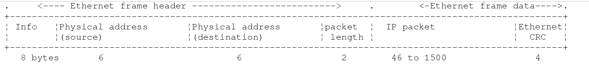
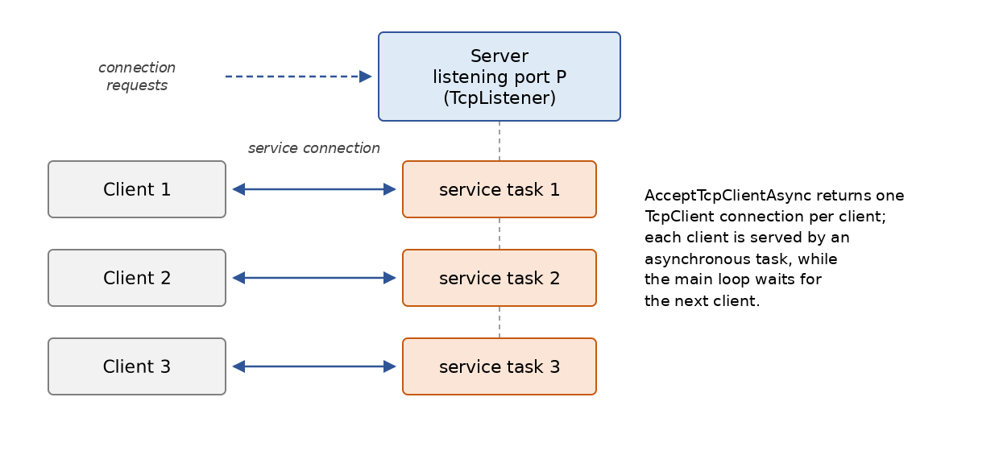
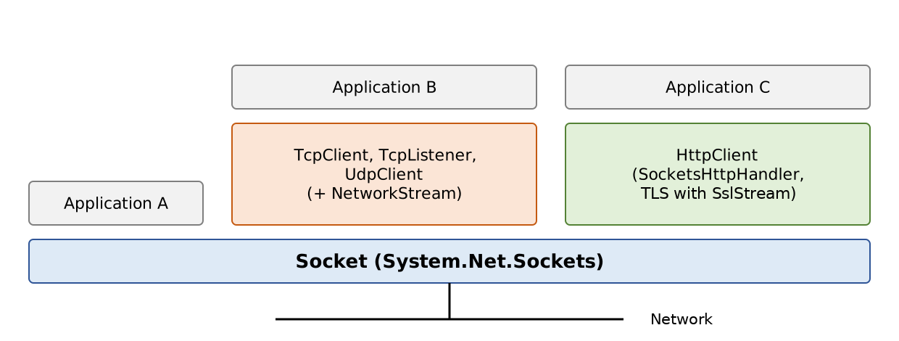
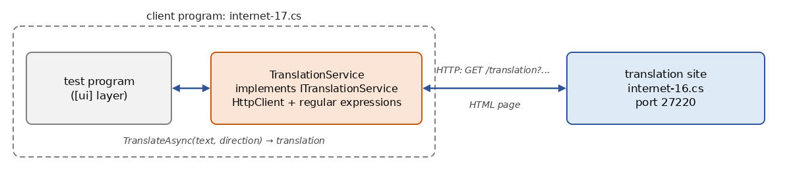

12. Webprogrammeren
12.1. Overzicht
12.1.1. Internetprotocollen
Hier geven we een inleiding op de communicatieprotocollen van het internet, ook wel de TCP/IP-protocolsuite genoemd (Transmission Control Protocol / Internet Protocol), genoemd naar de twee belangrijkste protocollen. Het is nuttig dat de lezer een algemeen idee heeft van de werking van netwerken, en met name van de TCP/IP-protocollen, voordat hij aan de slag gaat met de ontwikkeling van gedistribueerde applicaties. De cursus uit 2008 bevatte een vertaald fragment uit de beheerhandleiding „Lan Workplace for DOS” van Novell (begin jaren negentig). We hebben de structuur en de geest ervan behouden, maar de tekst bijgewerkt: het internet van 2026 is niet meer helemaal hetzelfde als dat van 1990.
Het algemene idee om een netwerk van heterogene computers te creëren komt voort uit onderzoek van DARPA (Defense Advanced Research Projects Agency) in de Verenigde Staten. DARPA ontwikkelde de reeks protocollen die bekendstaat als TCP/IP, waarmee heterogene machines met elkaar kunnen communiceren. Deze protocollen werden getest op een netwerk met de naam ARPAnet, dat later het internet werd (ARPAnet nam TCP/IP op 1 januari 1983 over). De TCP/IP-protocollen definiëren formaten en regels voor verzending en ontvangst die onafhankelijk zijn van de netwerkarchitectuur en de gebruikte hardware.
Het netwerk dat door DARPA is ontworpen en door de TCP/IP-protocollen wordt beheerd, is een pakketgeschakeld netwerk. Zo'n netwerk verzendt informatie in kleine stukjes, pakketten genoemd. Als een computer dus een groot bestand verzendt, wordt dit in kleine stukjes opgedeeld die over het netwerk worden verstuurd en op de bestemming weer worden samengevoegd. TCP/IP definieert het formaat van deze pakketten, met name:
- de bron van het pakket;
- de bestemming;
- de lengte;
- het type.
Internetprotocollen worden beschreven in openbare documenten die RFC (Request for Comments) worden genoemd, gepubliceerd door de IETF (Internet Engineering Task Force) en beschikbaar op www.rfc-editor.org. We zullen in dit hoofdstuk enkele van deze documenten aanhalen.
12.1.2. Het OSI-model
De TCP/IP-protocollen volgen over het algemeen het open netwerkmodel dat bekendstaat als OSI (Open Systems Interconnection Reference Model), gedefinieerd door de ISO (International Organization for Standardization). Dit model beschrijft een ideaal netwerk waarin de communicatie tussen machines kan worden voorgesteld met een model van zeven lagen:

Elke laag ontvangt diensten van de laag eronder en levert zijn eigen diensten aan de laag erboven. Stel dat twee applicaties op verschillende machines, A en B, met elkaar willen communiceren: ze doen dat op de applicatielaag. Ze hoeven niet alle details te kennen van de werking van het netwerk: elke applicatie geeft de informatie die ze wil verzenden door aan de laag eronder, de presentatielaag. De applicatie hoeft dus alleen de regels te kennen voor de interface met de presentatielaag. Zodra de informatie in de presentatielaag zit, wordt ze volgens andere regels doorgegeven aan de sessielaag, enzovoort, totdat de informatie het fysieke medium bereikt en fysiek naar de bestemmingsmachine wordt verzonden. Daar ondergaat ze het omgekeerde proces van wat ze op de verzendende machine heeft ondergaan.
In elke laag stuurt het verzendproces dat verantwoordelijk is voor het verzenden van de informatie deze naar een ontvangstproces op de andere machine dat tot dezelfde laag behoort. Dit gebeurt volgens bepaalde regels, het laagprotocol genoemd. De werkelijke communicatie loopt omlaag door de lagen van machine A, steekt het fysieke netwerk over en loopt vervolgens omhoog door de lagen van machine B; elke laag neemt echter waar dat ze rechtstreeks communiceert met de overeenkomstige laag op de andere machine.
De rollen van de verschillende lagen zijn als volgt:
Laag | Rol |
Fysiek | Zorgt voor de overdracht van bits via een fysiek medium (koperkabel, glasvezelkabel, radiogolven). Belangrijke aandachtspunten op dit niveau zijn de codering van informatie in signalen en de verzendmethode. |
Datalink | Abstraheert de fysieke eigenschappen van de fysieke laag. Verdeelt informatie in frames, detecteert (en corrigeert soms) overdrachtsfouten en beheert de toegang tot het gedeelde medium. |
Netwerk | Beheert het pad dat informatie die over het netwerk wordt verzonden, moet volgen. Dit heet routering: het bepalen van de route die informatie moet afleggen om haar bestemming te bereiken. |
Transport | Maakt communicatie tussen twee applicaties mogelijk, terwijl de voorgaande lagen alleen communicatie tussen machines toestonden. Een dienst van deze laag is multiplexing: de transportlaag gebruikt één netwerkverbinding (van machine naar machine) om gegevens van meerdere applicaties te verzenden. |
Sessie | Biedt diensten waarmee een applicatie een werksessie op een externe machine kan openen en onderhouden. |
Presentatie | Standaardiseert de weergave van gegevens op verschillende machines. Gegevens van machine A worden door de presentatielaag van machine A „geformatteerd” volgens een standaardformaat voordat ze over het netwerk worden verzonden. Zodra ze de presentatielaag van de bestemmingsmachine B bereiken, die ze herkent aan hun standaardformaat, worden de gegevens opnieuw geformatteerd zodat de applicatie op machine B ze kan herkennen. |
Applicatie | Op dit niveau bevinden zich applicaties die over het algemeen dicht bij de gebruiker staan, zoals e-mail, het web of bestandsoverdracht. |
12.1.3. Het TCP/IP-model
Het OSI-model is een referentiemodel dat nooit als zodanig is geïmplementeerd. De TCP/IP-protocolsuite, die de standaard is geworden, is georganiseerd in slechts vier lagen:

De sessie- en presentatielaag bestaan als zodanig niet in TCP/IP: hun functies worden, indien nodig, verzorgd door de applicaties zelf of door tussenliggende protocollen zoals TLS (versleuteling van gegevensuitwisselingen), dat tussen TCP en de applicatie wordt geplaatst.
De netwerktoegangslaag
In lokale netwerken is de dominante technologie tegenwoordig Ethernet voor bekabelde verbindingen en wifi (IEEE 802.11-standaarden) voor draadloze verbindingen. De cursus uit 2008 behandelde ook Token Ring, een technologie die tegenwoordig niet meer wordt gebruikt.
Ethernet is de naam van een pakketgeschakelde technologie voor lokale netwerken die begin jaren zeventig bij Xerox is uitgevonden en in 1980 door Xerox, Intel en Digital Equipment is gestandaardiseerd, en later door de IEEE (standaard 802.3). Het oorspronkelijke Ethernet bestond uit een coaxkabel waarop alle machines waren aangesloten (bustopologie), met een gegevenssnelheid van 10 megabit per seconde:

Dit was een broadcastnetwerk: een zendende machine stuurde informatie over de kabel die het adres van de bestemmingsmachine bevatte; alle aangesloten machines ontvingen de informatie en alleen de beoogde ontvanger hield deze vast. Omdat meerdere machines tegelijkertijd konden besluiten te zenden, moesten botsingen worden gedetecteerd: dit was de methode Carrier Sense Multiple Access/Collision Detect (CSMA/CD). Elke zender luisterde naar de kabel voordat hij zond (CSMA) en controleerde tijdens het zenden of wat er over de kabel ging inderdaad overeenkwam met wat hij had verzonden; zo niet, dan was er een botsing (CD): beide zenders stopten en probeerden het na een willekeurige vertraging opnieuw.
Modern Ethernet is sterk geëvolueerd: apparaten worden via twisted-pairkabels of glasvezelkabels aangesloten op een switch, die elk frame doorstuurt naar de specifieke poort van de ontvanger. Verbindingen zijn full-duplex (gelijktijdig verzenden en ontvangen): er zijn geen botsingen meer en CSMA/CD is achterhaald. Typische gegevenssnelheden lopen van 1 tot 10 gigabit per seconde, en veel hoger in datacenters.
Wat niet is veranderd, is de 48-bits adressering: elke netwerkkaart heeft een adres, het fysieke adres of MAC-adres (Media Access Control) genoemd, dat doorgaans wordt geschreven als zes hexadecimale bytes (bijvoorbeeld [00:1A:2B:3C:4D:5E]). Het wordt door de fabrikant in de kaart ingebouwd, maar kan, anders dan in de cursus uit 2008 werd gesteld, via software worden gewijzigd: huidige besturingssystemen gebruiken op wifinetwerken zelfs willekeurige MAC-adressen om te voorkomen dat een apparaat van netwerk naar netwerk kan worden gevolgd.
De internetlaag (netwerklaag)
Op deze laag vinden we de volgende protocollen:
Protocol | Rol |
IP (Internet Protocol) | levert pakketten af tussen twee netwerkknooppunten, in versie 4 (IPv4) of 6 (IPv6) |
ICMP (Internet Control Message Protocol) | vergemakkelijkt de communicatie tussen het IP-protocolprogramma op de ene machine en dat op een andere machine. Het is dus een protocol voor de uitwisseling van controleberichten binnen het IP-protocol zelf |
ARP (Address Resolution Protocol) | koppelt het IP-adres van een machine aan het fysieke adres van die machine (in IPv6 wordt deze rol vervuld door het NDP-protocol, het Neighbor Discovery Protocol) |
In de cursus uit 2008 werd ook RARP (Reverse Address Resolution Protocol) genoemd, dat de omgekeerde koppeling verzorgde. Dit is al lang verouderd ten gunste van DHCP, waarover we later meer zeggen.
De transportlaag
Deze laag omvat de volgende protocollen:
Protocol | Rol |
TCP (Transmission Control Protocol) | zorgt voor betrouwbare en geordende aflevering van informatie tussen twee applicaties |
UDP (User Datagram Protocol) | zorgt voor onbetrouwbare aflevering van informatie tussen twee applicaties |
Het protocol QUIC (2021), waarop HTTP/3 is gebaseerd, is een betrouwbaar, versleuteld transportprotocol dat boven op UDP is gebouwd.
De applicatielaag
Hier vinden we diverse protocollen, die we iets verderop nader uitwerken:
Protocol | Rol |
HTTP, HTTPS (HyperText Transfer Protocol) | Het webprotocol: een client (browser, applicatie) vraagt bronnen op bij een webserver. HTTPS is HTTP versleuteld met TLS |
DNS (Domain Name System) | zet een machinenaam om in een IP-adres |
SMTP (Simple Mail Transfer Protocol) | maakt het verzenden van e-mail mogelijk |
POP3, IMAP | maken het mogelijk om e-mail te lezen die op een server is opgeslagen |
SSH (Secure Shell) | maakt het mogelijk verbinding te maken met een externe machine en daarop met versleuteling opdrachten uit te voeren. Het verving TELNET, dat dezelfde functie zonder versleuteling vervulde |
FTP (File Transfer Protocol), SFTP | maken bestandsoverdracht mogelijk |
DHCP (Dynamic Host Configuration Protocol) | stelt een machine in staat automatisch zijn IP-adres en netwerkconfiguratie te verkrijgen |
12.1.4. Hoe internetprotocollen werken
Applicaties die in de TCP/IP-omgeving worden ontwikkeld, gebruiken doorgaans meerdere protocollen uit die omgeving. Een applicatieprogramma communiceert met de hoogste laag van de protocollen. Deze laag geeft de informatie door aan de laag eronder, enzovoort, totdat het fysieke medium is bereikt. Daar wordt de informatie fysiek overgebracht naar de ontvangende machine, waar ze dezelfde lagen opnieuw doorloopt, ditmaal in omgekeerde volgorde, totdat ze de applicatie bereikt die de beoogde ontvanger van de verzonden informatie is. Het volgende diagram toont het pad van de informatie:

Laten we een voorbeeld nemen: een applicatie die met TCP een bestand naar een andere machine verzendt.
- De applicatie levert een reeks bytes die moeten worden verzonden af bij de transportlaag;
- de transportlaag verdeelt deze reeks bytes in TCP-segmenten en voegt aan het begin van elk segment een header toe die onder meer de poortnummers van bron en bestemming bevat, evenals een volgnummer. De segmenten worden doorgegeven aan de netwerklaag, die door het IP-protocol wordt beheerst;
- de IP-laag maakt een pakket waarin het ontvangen TCP-segment wordt ingekapseld. In de header van dit pakket plaatst ze de IP-adressen van de bron- en de bestemmingsmachine. Ze bepaalt ook het fysieke adres van de machine waaraan het pakket moet worden afgeleverd (de bestemmingsmachine zelf of een router). Het hele pakket wordt doorgegeven aan de netwerktoegangslaag, dat wil zeggen aan de netwerkkaart die de machine met het fysieke netwerk verbindt;
- daar wordt het IP-pakket op zijn beurt ingekapseld in een fysiek frame en via het medium naar zijn ontvanger verzonden;
- Op de bestemmingsmachine voert de netwerktoegangslaag het omgekeerde proces uit: ze haalt het IP-pakket uit het fysieke frame en geeft het door aan de IP-laag;
- de IP-laag controleert of het pakket geldig is: ze berekent een controlesom van de header, die ze in de header van het pakket moet terugvinden. Is dat niet het geval, dan wordt het pakket verworpen;
- als het pakket geldig wordt bevonden, haalt de IP-laag het TCP-segment eruit dat erin zit en geeft het omhoog door aan de transportlaag;
- de TCP-laag controleert ook een controlesom voor het segment. Als deze klopt, stuurt ze een ontvangstbevestiging naar de bronmachine; anders wordt het segment genegeerd (en wordt het door de bron opnieuw verzonden);
- Met behulp van de volgnummers zet de TCP-laag de segmenten in de juiste volgorde;
- de TCP-laag hoeft dan alleen nog het gegevensgedeelte van de segmenten door te geven aan de bestemmingsapplicatie, die wordt geïdentificeerd door het poortnummer van de bestemming.
12.1.5. Adresseringsvraagstukken op het internet
Een netwerkknooppunt kan een computer, een printer, een telefoon of een verbonden apparaat zijn: eigenlijk alles wat kan communiceren met de TCP/IP-protocollen. Elk knooppunt heeft een fysiek adres waarvan het formaat afhangt van het type netwerk. Op een Ethernet- of wifinetwerk wordt het fysieke adres gecodeerd met 6 bytes.
Het internetadres (IP) van een knooppunt is een logisch adres: het is onafhankelijk van de hardware en het gebruikte netwerk. In IPv4 is het een adres van 4 bytes dat zowel een netwerk als een knooppunt in dat netwerk identificeert. Het wordt gewoonlijk weergegeven als vier getallen, de waarden van de vier bytes, gescheiden door een punt. In 2008 was het adres van de machine „Lagaffe” van de Faculteit Wetenschappen in Angers bijvoorbeeld 193.49.144.1 en dat van de machine „Liny” 193.49.144.9. Hieruit kon worden afgeleid dat het adres van het lokale netwerk 193.49.144.0 was en dat er maximaal 254 knooppunten in dat netwerk konden zijn.
Omdat IP-adressen onafhankelijk zijn van het fysieke netwerk, kan een computer in netwerk A communiceren met een computer in netwerk B zonder zich zorgen te maken over het type netwerk waarop die laatste zich bevindt: het volstaat het IP-adres te kennen. Het IP-protocol in elk netwerk verzorgt de omzetting tussen IP-adressen en fysieke adressen, in beide richtingen.
Alle openbare IP-adressen moeten uniek zijn. De toewijzing volgt een hiërarchische structuur: de IANA (Internet Assigned Numbers Authority) verdeelt adresblokken over vijf regionale registers, waaronder het RIPE NCC voor Europa, die ze op hun beurt verdelen over providers en grote organisaties. Deze instanties wijzen ze vervolgens toe aan hun klanten. De beheerder van een netwerk dat het blok 193.49.144.0 tot en met 193.49.144.255 heeft ontvangen, kan de adressen 193.49.144.1 tot en met 193.49.144.254 naar eigen inzicht toewijzen. In de cursus uit 2008 stond dat in Frankrijk INRIA verantwoordelijk was voor het toewijzen van adressen; dat is al lang niet meer het geval.
12.1.5.1. IP-adresklassen en CIDR-notatie
Een IPv4-adres is een reeks van 4 bytes, geschreven als I1.I2.I3.I4, die in feite twee gegevens bevat:
- het netwerkadres (de meest significante bits);
- het adres van een knooppunt binnen dat netwerk (de minst significante bits).
Oorspronkelijk werd de grootte van deze twee velden bepaald door de waarde van de eerste byte. IP-adressen werden verdeeld in drie hoofdklassen:
Klasse | Eerste byte | Netwerk / knooppunt | Aantal netwerken en knooppunten |
A | 1 tot 126 (meest significante bit 0) | R1.N1.N2.N3: netwerk van 1 byte (7 significante bits), knooppunt van 3 bytes | 126 netwerken met 2²⁴ - 2 knooppunten (circa 16 miljoen) |
B | 128 tot 191 (meest significante bits 10) | R1.R2.N1.N2: netwerk van 2 bytes (14 significante bits), knooppunt van 2 bytes | 2¹⁴ = 16.384 netwerken met 2¹⁶ - 2 = 65.534 knooppunten |
C | 192 tot 223 (meest significante bits 110) | R1.R2.R3.N1: netwerk van 3 bytes (21 significante bits), knooppunt van 1 byte | 2²¹ netwerken (circa 2 miljoen) met 254 knooppunten |
Omdat het adres van de machine Lagaffe 193.49.144.1 is, is de meest significante byte 193, in binair 11000001: het netwerk was een klasse C-netwerk.
Deze indeling bleek veel te rigide: een organisatie met 300 machines moest een klasse B-netwerk gebruiken, waarbij meer dan 65.000 adressen verspild werden. Sinds 1993 (RFC 1518 en 1519) zijn de klassen verlaten ten gunste van classless routing (CIDR, Classless Inter-Domain Routing). De grens tussen het netwerkgedeelte en het hostgedeelte kan bij elk bit worden gelegd; ze wordt aangegeven door de lengte van het netwerkprefix, na een schuine streep:
- 193.49.144.0/24: de eerste 24 bits geven het netwerk aan en de laatste 8 bits het knooppunt. Dit netwerk bevat de adressen 193.49.144.0 tot en met 193.49.144.255;
- 10.0.0.0/8: een netwerk met 2²⁴ adressen;
- 192.168.1.0/26: een netwerk van 2⁶ = 64 adressen, van 192.168.1.0 tot en met 192.168.1.63.
De oude notatie voor het subnetmasker wordt nog steeds gebruikt en drukt hetzelfde uit: het prefix /24 komt overeen met het masker 255.255.255.0. De termen „klasse A, B, C” worden nog veel gebruikt, maar komen niet meer overeen met een daadwerkelijk mechanisme.
12.1.5.2. Gereserveerde adressen, privéadressen en NAT
Bepaalde adressen hebben een specifieke functie:
- een adres waarvan het hostgedeelte uitsluitend uit nullen bestaat, verwijst naar het netwerk zelf: 193.49.144.0 is het adres van het netwerk 193.49.144.0/24;
- een adres waarvan het hostgedeelte uitsluitend uit enen bestaat, is een broadcastadres: 193.49.144.255 verwijst naar alle hosts in het netwerk 193.49.144.0/24. Deze twee adressen kunnen dus niet aan een knooppunt worden toegewezen: een /24-netwerk met 256 adressen biedt slechts 254 bruikbare adressen;
- de adressen 127.0.0.0/8, en in de praktijk 127.0.0.1, zijn loopbackadressen: een machine gebruikt ze om naar zichzelf te verwijzen zonder via het netwerk te gaan. De naam [localhost] is eraan gekoppeld;
- de blokken 10.0.0.0/8, 172.16.0.0/12 en 192.168.0.0/16 (RFC 1918) zijn gereserveerd voor privénetwerken: ze kunnen vrij worden gebruikt binnen een bedrijf of een woning, maar worden niet over het internet gerouteerd;
- de blokken 192.0.2.0/24, 198.51.100.0/24 en 203.0.113.0/24 (RFC 5737) zijn gereserveerd voor documentatie en voorbeelden.
Het aantal IPv4-adressen (2³², ofwel iets meer dan 4 miljard) is onvoldoende voor alle verbonden machines. De centrale adresvoorraad van de IANA was in 2011 uitgeput, die van het RIPE NCC in 2019. Het tekort is omzeild met Network Address Translation (NAT): apparaten in een woning hebben privéadressen (zoals 192.168.1.x) en de router die ze met het internet verbindt, „vertaalt” deze naar zijn eigen unieke openbare adres. De oplossing voor de lange termijn is IPv6.
12.1.5.3. IPv6-adressen
IPv6 (RFC 2460 in 1998, nu RFC 8200) codeert adressen met 128 bits, wat 2¹²⁸ mogelijke adressen oplevert, ongeveer 3,4 × 10³⁸, zodat een tekort geen reden tot zorg meer is. Een IPv6-adres wordt geschreven als acht groepen van vier hexadecimale cijfers, gescheiden door dubbele punten:
Voorloopnullen in elke groep mogen worden weggelaten en één reeks nulgroepen mag worden vervangen door [::]. Het vorige adres wordt dus geschreven als [2001:db8::8a2e:0:370:7334]. Het loopbackadres, gelijkwaardig aan 127.0.0.1, is [::1]. In een URL wordt een IPv6-adres tussen blokhaken geplaatst om te voorkomen dat de dubbele punt wordt verward met die vóór de poort: [http://[::1]:8080/].
IPv6 introduceert verdere vereenvoudigingen: de pakketheader heeft een vaste lengte, automatische adresconfiguratie is standaard ingebouwd en NAT-adresvertaling is niet langer nodig. De adoptie verliep traag, maar een aanzienlijk en groeiend deel van het internetverkeer loopt nu via IPv6 (Google publiceert bijvoorbeeld het aandeel van zijn gebruikers dat via IPv6 verbinding maakt) en de grote Franse internetproviders bieden het aan hun abonnees aan. Beide versies bestaan naast elkaar: de meeste machines hebben zowel IPv4- als IPv6-adressen (dit heet „dual stack”) en programma's moeten met beide overweg kunnen.
12.1.5.4. Protocollen voor het omzetten tussen IP-adressen en fysieke adressen
We hebben gezien dat gegevens die van de ene machine naar de andere worden verzonden, bij het passeren van de IP-laag in pakketten worden ingekapseld. Deze pakketten hebben de volgende vorm:

Het IP-pakket bevat dus de IP-adressen van de bron- en de bestemmingsmachine. Wanneer dit pakket wordt doorgegeven aan de laag die verantwoordelijk is voor de verzending over het fysieke netwerk, wordt er extra informatie aan toegevoegd om het fysieke frame te vormen dat uiteindelijk over het netwerk wordt verzonden. Het formaat van een frame op een Ethernetnetwerk is bijvoorbeeld als volgt:

De eerste 8 bytes (preambule) dienen voor synchronisatie; het veld van 2 bytes vóór de gegevens geeft, in de meest gangbare vorm van het Ethernetframe, het type protocol aan dat wordt getransporteerd (IPv4, IPv6, ARP…) in plaats van de pakketlengte. In het uiteindelijke frame staan de fysieke adressen van de bron- en de bestemmingsmachine (in het werkelijke frame gaat het bestemmingsadres vooraf aan het bronadres, in tegenstelling tot de volgorde in het diagram). Hoe worden ze verkregen?
De verzendende machine, die het IP-adres kent van de machine waarmee ze wil communiceren, verkrijgt het fysieke adres van die machine met het ARP-protocol (Address Resolution Protocol):
- ze verzendt een speciaal type pakket, een ARP-pakket genoemd, dat het IP-adres bevat van de machine waarvan het fysieke adres wordt gezocht. Het bevat ook haar eigen IP-adres en haar fysieke adres;
- dit pakket wordt naar alle knooppunten van het lokale netwerk verzonden (broadcast);
- deze knooppunten herkennen het speciale karakter van het pakket. Het knooppunt dat zijn IP-adres in het pakket herkent, antwoordt door zijn fysieke adres naar de afzender te sturen. Dit kan het doen omdat het in het pakket het IP-adres en het fysieke adres van de afzender heeft aangetroffen;
- De afzender ontvangt dus het fysieke adres dat hij zocht. Hij slaat dit op in een cache, zodat hij het later kan gebruiken als er andere pakketten naar dezelfde ontvanger moeten worden verzonden.
In IPv6 wordt dezelfde dienst geleverd door het NDP-protocol (Neighbor Discovery Protocol), dat gebruikmaakt van ICMPv6-berichten.
De vraag blijft hoe een machine haar eigen IP-adres kent. Dit kan worden opgegeven in een configuratiebestand op de machine; voor servers is dat nog steeds de gangbare praktijk. Wanneer een beheerder het netwerk echter moet herorganiseren, is het een vervelend en foutgevoelig werk om de configuratiebestanden van alle machines één voor één aan te passen. In de cursus uit 2008 werd het RARP-protocol geïntroduceerd, waarmee een machine haar IP-adres bij een server opvroeg op basis van haar fysieke adres. Dit is vervangen door DHCP (Dynamic Host Configuration Protocol, RFC 2131): bij het opstarten zendt de machine een verzoek uit over het netwerk; een server (zoals een router thuis of een speciale server in een bedrijf) wijst haar voor een beperkte tijd een adres toe (een lease), samen met de rest van haar configuratie: netwerkprefix, routeradres en adressen van DNS-servers. De beheerder hoeft dan alleen de DHCP-server te configureren. In IPv6 kan een apparaat ook zelf zijn adres samenstellen op basis van het prefix dat door de router wordt aangekondigd (SLAAC-autoconfiguratie).
12.1.6. De netwerklaag, de zogenoemde IP-laag, van het internet
Het IP-protocol definieert het formaat dat pakketten moeten hebben en hoe ze moeten worden afgehandeld bij verzending of ontvangst. Dit specifieke type pakket heet een IP-datagram. We hebben het al besproken:
Het belangrijkste is dat het IP-datagram, naast de te verzenden gegevens, de IP-adressen van de bron- en de bestemmingsmachine bevat. Zo weet de bestemmingsmachine wie haar een bericht stuurt.
In tegenstelling tot een netwerkframe, waarvan de lengte wordt bepaald door de fysieke eigenschappen van het netwerk waarover het reist, wordt de lengte van het IP-datagram door de software bepaald en is die dus gelijk over verschillende fysieke netwerken. We hebben gezien dat het IP-datagram, wanneer we van de netwerklaag naar de fysieke laag gaan, wordt ingekapseld in een fysiek frame.
Fysieke frames reizen van knooppunt naar knooppunt naar hun bestemming, die zich mogelijk niet in hetzelfde fysieke netwerk bevindt als de verzendende machine. Het IP-pakket kan dus achtereenvolgens in verschillende fysieke frames worden ingekapseld bij de knooppunten die twee netwerken van verschillende typen verbinden. Het is ook mogelijk dat het IP-pakket te groot is om in een fysiek frame te worden ingekapseld (de payload van een Ethernetframe is beperkt tot 1.500 bytes). In IPv4 splitst het knooppunt waar dit probleem optreedt het IP-pakket dan in fragmenten, die pas op hun eindbestemming weer worden samengevoegd. In IPv6 fragmenteren routers pakketten niet meer: het is aan de afzender om de maximale grootte te bepalen die onderweg wordt geaccepteerd en de grootte van zijn pakketten daarop af te stemmen.
12.1.6.1. Routering
Routering is de methode om IP-pakketten naar hun bestemming te leiden. Er zijn twee methoden: directe routering en indirecte routering.
Directe routering
Directe routering is het rechtstreeks verzenden van een IP-pakket van de afzender naar de ontvanger binnen hetzelfde netwerk:
- de machine die een IP-datagram verzendt, beschikt over het IP-adres van de ontvanger;
- ze verkrijgt het fysieke adres van de ontvanger via het ARP-protocol, of uit haar cache als dat adres al eerder is verkregen;
- ze verzendt het pakket via het netwerk naar dat fysieke adres.
Indirecte routering
Indirecte routering is het verzenden van een IP-pakket naar een bestemming in een ander netwerk dan dat waartoe de afzender behoort. In dat geval verschillen de „netwerk”-gedeelten van de IP-adressen van de bron- en de bestemmingsmachine; de bronmachine stelt dit vast door het bestemmingsadres te vergelijken met haar eigen netwerkprefix. Ze verzendt het pakket dan naar een speciaal knooppunt, een router genoemd, dat het lokale netwerk met andere netwerken verbindt en waarvan het IP-adres bij de bronmachine bekend is (dit heet de standaardgateway, die gewoonlijk door DHCP wordt geleverd). Een router is met ten minste twee netwerken verbonden en heeft in elk daarvan een IP-adres:

In ons voorbeeld hierboven:
- Netwerk nr. 1 heeft het adres 193.49.144.0/24 en netwerk nr. 2 heeft het adres 193.49.145.0/24;
- binnen netwerk nr. 1 heeft de router het adres 193.49.144.6 en binnen netwerk nr. 2 heeft hij het adres 193.49.145.3.
De rol van de router is om het IP-pakket dat hij ontvangt, in een fysiek frame uit netwerk nr. 1, te plaatsen in een fysiek frame dat over netwerk nr. 2 kan reizen. Als het IP-bestemmingsadres van het pakket zich in netwerk nr. 2 bevindt, verzendt de router het pakket er rechtstreeks naartoe; anders verzendt hij het naar een andere router die netwerk nr. 2 met netwerk nr. 3 verbindt, enzovoort. Internetrouters wisselen voortdurend informatie uit over de netwerken die ze kunnen bereiken (routeringsprotocollen zoals BGP tussen providers) om hun routeringstabellen op te bouwen.
12.1.6.2. Fout- en controleberichten
Ook in de netwerklaag, en dus op hetzelfde niveau als het IP-protocol, bevindt zich het protocol ICMP (Internet Control Message Protocol). Het wordt gebruikt om berichten te verzenden over de interne werking van het netwerk: onbereikbaar knooppunt, pakket dat te veel routers heeft doorlopen enzovoort. ICMP-berichten worden ingekapseld in IP-pakketten en over het netwerk verzonden. De IP-lagen van de verschillende knooppunten ondernemen de passende acties op basis van de ICMP-berichten die ze ontvangen. Een applicatie ziet deze netwerkspecifieke problemen dus zelf nooit. De opdrachten [ping] (die ICMP-berichten „Echo Request” verzenden en wachten op berichten „Echo Reply”) en [traceroute] / [tracert] (die de doorlopen routers weergeeft) zijn gebaseerd op ICMP.
12.1.7. De transportlaag: de protocollen UDP en TCP
12.1.7.1. Het UDP-protocol: User Datagram Protocol
Het UDP-protocol maakt een onbetrouwbare gegevensuitwisseling tussen twee punten mogelijk; dat wil zeggen dat de succesvolle aflevering van een pakket op zijn bestemming niet gegarandeerd is, en de volgorde waarin pakketten aankomen evenmin. De applicatie kan dit, als ze dat wil, zelf afhandelen, bijvoorbeeld door na het verzenden van een bericht op een ontvangstbevestiging te wachten voordat ze het volgende verzendt.
Tot nu toe hebben we op netwerkniveau de IP-adressen van machines besproken. Op één machine kunnen echter verschillende processen tegelijkertijd bestaan, en die kunnen allemaal met elkaar communiceren. Bij het verzenden van een bericht moet u dus niet alleen het IP-adres van de bestemmingsmachine opgeven, maar ook de „naam” van het bestemmingsproces. Deze naam is in feite een getal van 16 bits (van 1 tot 65.535), een poortnummer genoemd. Bepaalde nummers zijn gereserveerd voor standaardapplicaties: poort 53 voor DNS, 80 voor HTTP, 443 voor HTTPS, 25 voor SMTP enzovoort. Poorten onder 1024 heten „well-known”; onder Linux zijn speciale rechten nodig om een service op een van die poorten te openen. De voorbeelden in dit hoofdstuk gebruiken poorten uit de bereiken 27100–27199 en 27200–27299.
Pakketten die door het UDP-protocol worden afgehandeld, heten datagrammen. Ze hebben de volgende vorm:

Deze datagrammen worden ingekapseld in IP-pakketten en vervolgens in fysieke frames. UDP wordt gebruikt wanneer snelheid belangrijker is dan betrouwbaarheid, of wanneer de applicatie zelf pakketverlies afhandelt: DNS (één vraag, één antwoord), live audio- en videostreaming, online gaming en het QUIC-protocol van HTTP/3.
12.1.7.2. Het TCP-protocol: Transmission Control Protocol
Voor beveiligde communicatie volstaat het UDP-protocol niet: de applicatieontwikkelaar moet zelf een protocol maken om ervoor te zorgen dat pakketten correct worden afgeleverd. Het TCP-protocol voorkomt deze problemen. De kenmerken ervan zijn als volgt:
- Het proces dat gegevens wil verzenden, maakt eerst een verbinding met het proces dat de informatie zal ontvangen die het gaat verzenden. Deze verbinding wordt tot stand gebracht tussen een poort op de verzendende machine en een poort op de ontvangende machine, via een uitwisseling van drie segmenten (SYN, SYN-ACK, ACK: de „three-way handshake”). Zo ontstaat tussen de twee poorten een virtueel circuit dat exclusief gereserveerd is voor de twee processen die de verbinding hebben gemaakt;
- alle bytes die door het bronproces worden verzonden, komen in de volgorde van verzending op hun bestemming aan, wat het UDP-protocol niet garandeert, omdat pakketten verschillende paden kunnen volgen;
- De verzonden informatie is continu: het is een stroom van bytes. Het verzendende proces verzendt informatie in zijn eigen tempo. Deze informatie wordt niet noodzakelijk meteen verzonden: het TCP-protocol kan wachten tot het genoeg gegevens heeft om te verzenden. De gegevens worden in een structuur geplaatst die een TCP-segment heet. Zodra dit segment is gevuld, wordt het doorgegeven aan de IP-laag, waar het wordt ingekapseld in een IP-pakket. Een belangrijk gevolg voor de programmeur: een „regel” die in één keer is verzonden, kan in meerdere stukken aankomen en meerdere regels kunnen samen aankomen. Het is aan de applicatie om de grenzen van haar berichten te bepalen (wij gebruiken hiervoor het regeleinde);
- Elk segment dat via het TCP-protocol wordt verzonden, is genummerd. Het ontvangende TCP-protocol controleert of het de segmenten in de juiste volgorde ontvangt. Voor elk correct ontvangen segment stuurt het een ontvangstbevestiging naar de afzender;
- als het TCP-protocol dat een segment heeft verzonden na een bepaalde tijd geen ontvangstbevestiging ontvangt, zendt het het betreffende segment opnieuw uit, waarmee de kwaliteit van de gegevenslevering wordt gewaarborgd;
- Het virtuele circuit dat tussen de twee communicerende processen is opgezet, is full-duplex: informatie kan in beide richtingen tegelijk reizen. Het bestemmingsproces kan dus ontvangstbevestigingen sturen terwijl het bronproces gewoon doorgaat met het verzenden van informatie. Zo kan het TCP-protocol aan de bronzijde bijvoorbeeld meerdere segmenten verzenden zonder op bevestigingen te wachten. Als het na een bepaalde tijd merkt dat het voor een bepaald segment nr. n geen ontvangstbevestiging heeft gekregen, hervat het de verzending van segmenten vanaf dat punt;
- TCP regelt ook zelf zijn datasnelheid om overbelasting van de ontvanger (flow control) of van het netwerk (congestion control) te voorkomen.
12.1.8. De applicatielaag
Boven de protocollen UDP en TCP bevinden zich diverse standaardprotocollen:
TELNET en SSH
Met TELNET kan een gebruiker op machine A verbinding maken met machine B (vaak de hostmachine genoemd), alsof hij een terminal had die op die machine was aangesloten. TELNET is gebaseerd op TCP. De gegevensuitwisseling, inclusief wachtwoorden, verloopt in platte tekst: het is vervangen door SSH (Secure Shell), dat dezelfde dienst op versleutelde wijze levert en ook wordt gebruikt voor veilige bestandsoverdracht (SFTP, SCP) en voor het aanmaken van tunnels. In 2008 bleef het clientprogramma [telnet] een handig hulpmiddel om „handmatig” met een TCP-server te communiceren: we zullen zien hoe u dat kunt vervangen.
FTP (File Transfer Protocol)
Dit protocol maakt de uitwisseling van bestanden tussen twee externe machines mogelijk, evenals bestandsbewerkingen zoals het aanmaken van mappen. Het is gebaseerd op het TCP-protocol. Net als TELNET verstuurt het wachtwoorden in platte tekst; het wordt langzaam uitgefaseerd ten gunste van SFTP en HTTPS.
TFTP (Trivial File Transfer Protocol)
Dit protocol is een vereenvoudigde variant van FTP. Het is gebaseerd op het UDP-protocol. Het wordt nog steeds gebruikt om machines via het netwerk op te starten.
DNS (Domain Name System)
Wanneer een gebruiker informatie wil uitwisselen met een externe machine, moet hij het IP-adres van die machine kennen. Het is veel handiger om een machine met een naam aan te duiden dan met haar IP-adres. Dit roept het vraagstuk van de uniciteit van namen op: er zijn miljarden onderling verbonden machines. Men zou zich een centrale instantie kunnen voorstellen die de namen toekent, maar dat zou erg omslachtig zijn. De controle over de namen is verdeeld over domeinen. Elk domein wordt beheerd door een organisatie die volledige vrijheid heeft bij het kiezen van namen binnen haar domein. Zo behoren machines in Frankrijk vaak tot het domein [fr], dat wordt beheerd door AFNIC (tot de oprichting van AFNIC in 1997 werd het beheerd door INRIA). Om het nog eenvoudiger te maken, wordt de controle verder gedecentraliseerd: binnen het domein [fr] worden domeinen aangemaakt. De Université d'Angers is bijvoorbeeld eigenaar van het domein [univ-angers.fr]; de afdeling die het beheert, is volledig vrij om de computers op het netwerk van de universiteit een naam te geven en subdomeinen aan te maken.
De volledige naam van een machine (FQDN, Fully Qualified Domain Name) geeft de hiërarchie van domeinen aan waartoe de machine behoort, van het meest specifieke tot het meest algemene: [www.univ-angers.fr]. Binnen een domein kunnen vaak relatieve namen worden gebruikt, die automatisch door het systeem worden aangevuld.
Een applicatie kan een machine dus met haar naam aanduiden. Uiteindelijk moet u echter nog steeds het IP-adres van die machine achterhalen. Stel dat u vanaf machine A met machine B wilt communiceren:
- Machine A controleert eerst een lokaal bestand met koppelingen ([/etc/hosts] op Linux en macOS, [C:\Windows\System32\drivers\etc\hosts] op Windows) en vervolgens de cache;
- zo niet, dan raadpleegt zij de DNS-server waarvan het adres in haar configuratie staat (meestal verstrekt via DHCP). Zij stuurt een DNS-verzoek met de naam van de gezochte machine. Als de bevraagde server het antwoord kent of in de cache heeft, geeft hij het bijbehorende IP-adres terug aan machine A. Zo niet, dan raadpleegt hij op zijn beurt, te beginnen bij de rootservers, de servers die verantwoordelijk zijn voor het domein [fr], daarna voor [univ-angers.fr], enzovoort, totdat hij het antwoord heeft gekregen, dat vervolgens wordt doorgegeven aan machine A.
Het DNS-domein koppelt diverse typen records aan een naam: A (IPv4-adres), AAAA (IPv6-adres), CNAME (alias naar een andere naam), MX (mailservers van het domein), enzovoort.
HTTP en HTTPS (HyperText Transfer Protocol)
Dit is het webprotocol, veruit het meest gebruikte van dit moment: niet alleen door browsers, maar ook door applicaties die gegevens uitwisselen (de webservices die in het volgende hoofdstuk aan bod komen). We zullen het uitgebreid onderzoeken. HTTPS is HTTP verzonden via een met TLS (Transport Layer Security) versleutelde verbinding; dit is nu de standaardvorm van het web.
SMTP, POP3 en IMAP
SMTP wordt gebruikt om e-mails te verzenden, terwijl POP3 en IMAP worden gebruikt om op een server opgeslagen e-mails te lezen. Ook hierop komen we terug.
XDR, RPC, NFS
In de cursus van 2008 kwamen ook drie door Sun Microsystems gedefinieerde protocollen aan bod: XDR (eXternal Data Representation), dat een standaard, machineonafhankelijke gegevensrepresentatie specificeert; RPC (Remote Procedure Call), een protocol voor het aanroepen van procedures op afstand dat op XDR is gebaseerd; NFS (Network File System), waarmee de ene machine het bestandssysteem van een andere machine kan „zien” en dat op RPC is gebaseerd. NFS wordt nog steeds gebruikt in de Unixwereld. Het concept van procedureaanroepen op afstand is door talrijke opvolgers overgenomen; tegenwoordig zijn dat onder meer de webservices REST (gebaseerd op HTTP) en gRPC (gebaseerd op HTTP/2).
12.1.9. Conclusie
In deze inleiding hebben we enkele van de belangrijkste kenmerken van internetprotocollen gepresenteerd. Wie dit vakgebied dieper wil verkennen, kan het standaardwerk van Douglas Comer raadplegen, „Internetworking with TCP/IP, Volume 1” (Pearson, 6e editie) — eerdere edities zijn in het Frans vertaald — en de RFC's die in dit hoofdstuk worden genoemd. Voor HTTP is de documentatie van Mozilla op developer.mozilla.org/en-US/docs/Web/HTTP een uitstekende inleiding.
12.2. De .NET-klassen voor het beheer van IP-adressen
Een machine op internet wordt geïdentificeerd door een IP-adres, dat twee vormen kan aannemen:
- IPv4: gecodeerd in 32 bits en weergegeven door een tekenreeks van de vorm "I1.I2.I3.I4", waarbij In een getal tussen 0 en 255 is;
- IPv6: gecodeerd in 128 bits en weergegeven door een tekenreeks van acht groepen hexadecimale cijfers, gescheiden door dubbele punten, zoals "2001:db8::8a2e:370:7334". In de cursus van 2008 werd aangekondigd dat er geen IPv6-adressen zouden worden gebruikt; dat is tegenwoordig niet meer mogelijk: onze programma's accepteren ze.
Een machine kan ook worden geïdentificeerd door een naam. Die naam is niet verplicht, omdat applicaties uiteindelijk altijd de IP-adressen van de machines gebruiken. Namen zijn er om het leven van gebruikers te vergemakkelijken: het is eenvoudiger om een browser om de URL [https://learn.microsoft.com] te vragen dan om de URL die is opgebouwd uit een van de IP-adressen van deze site, die overigens verandert afhankelijk van de plaats waar het verzoek vandaan komt.
Een machine kan meerdere IP-adressen hebben: een loopbackadres, één adres per netwerk waarmee zij is verbonden, en IPv4- en IPv6-adressen.
Een IP-adres kan in .NET op twee manieren worden weergegeven:
- als een tekenreeks "I1.I2.I3.I4" of "2001:db8::1";
- als een object van het type [IPAddress] (namespace [System.Net]).
De klasse IPAddress
Tot de methoden M, eigenschappen P en statische velden F van de klasse [IPAddress] behoren de volgende:
Lid | Type | Rol |
AddressFamily AddressFamily | P | familie van het IP-adres. Het type [AddressFamily] (namespace [System.Net.Sockets]) is een enumeratie met twee huidige waarden: [AddressFamily.InterNetwork] (IPv4) en [AddressFamily.InterNetworkV6] (IPv6) |
static IPAddress Any | F | het IPv4-adres 0.0.0.0. Wanneer een service aan dit adres is gekoppeld, accepteert deze clients op alle IPv4-adressen van de machine |
static IPAddress Loopback | F | het loopbackadres 127.0.0.1. Een service die aan dit adres is gekoppeld, accepteert alleen clients die zich op dezelfde machine bevinden als de service zelf |
static IPAddress Broadcast | F | het broadcastadres 255.255.255.255 ([IPAddress.None] heeft dezelfde waarde) |
static IPAddress IPv6Any, IPv6Loopback | F | de IPv6-equivalenten van [Any] (::) en [Loopback] (::1) |
static IPAddress Parse(string ipString) | M | zet een IPv4- of IPv6-tekenreeks om in een [IPAddress]-object; genereert een [FormatException] als de tekenreeks geen IP-adres is |
static bool TryParse(string ipString, out IPAddress address) | M | Hetzelfde als hierboven, maar geeft [false] terug in plaats van een uitzondering te genereren |
static bool IsLoopback(IPAddress address) | M | geeft [true] terug als het adres een loopbackadres is (127.x.y.z of ::1) |
byte[] GetAddressBytes() | M | geeft de bytes van het adres terug (4 bij IPv4, 16 bij IPv6) |
string ToString() | M | geeft het adres terug in zijn standaard tekstuele vorm |
Twee andere typen vullen [IPAddress] aan:
- [IPEndPoint] vertegenwoordigt een verbindingspunt: een IP-adres en een poortnummer. De eigenschappen [Address] en [Port] leveren deze twee gegevens; de statische methode [IPEndPoint.Parse] verwerkt een tekenreeks zoals "127.0.0.1:27100" of "[::1]:27100";
- [IPNetwork] (sinds .NET 8) vertegenwoordigt een netwerk in CIDR-notatie, zoals 193.49.144.0/24. De methode [Contains] bepaalt of een adres tot het netwerk behoort.
Het programma [internet-01.cs] illustreert deze drie typen:
Resultaten:
Opmerkingen:
- regel 7: een collection expression initialiseert de array van te verwerken tekenreeksen;
- regel 12: [TryParse] geeft [true] terug als de tekenreeks een IPv4- of IPv6-adres is, en wijst het verkregen object [IPAddress] dan toe aan de variabele [address]. Het nullable type [IPAddress?] geeft aan dat deze variabele op [null] wordt gezet wanneer de analyse mislukt;
- regel 14: de eigenschap [AddressFamily] maakt onderscheid tussen de twee versies van IP;
- regel 15: [GetAddressBytes] geeft de bytes van het adres terug, die [Convert.ToHexString] hexadecimaal weergeeft. We zien (regel 2 van de resultaten) dat 193.49.144.1 bestaat uit de vier bytes C1, 31, 90, 01, en (regel 5) dat ::1 bestaat uit 15 nulbytes gevolgd door een byte met de waarde 1;
- Regel 4 van de resultaten: een verrassing. De tekenreeks "192.168.1" werd geaccepteerd en omgezet in 192.168.0.1. [TryParse] accepteert inderdaad de historische verkorte vormen van IPv4-adressen (waarbij het laatste getal alle resterende bytes beslaat). Om te controleren of een invoer een volledig IPv4-adres is, moet u dus ook nagaan of deze vier getallen bevat;
- regel 6: het IPv6-adres wordt opnieuw weergegeven in zijn genormaliseerde compacte vorm. Het prefix 2001:db8::/32 is, net als 192.0.2.0/24 in IPv4, gereserveerd voor documentatie;
- regel 27-31: [IPAddress.Parse] genereert een [FormatException] voor de tekenreeks „256.1.1.1” (256 past niet in één byte). Zoals in de rest van de cursus is het foutbericht in het Engels (.NET biedt geen Franse vertaling);
- regel 41: een [IPEndPoint]-object koppelt een adres aan een poort. De weergave ervan (regel 12 van de resultaten) heeft de vorm adres:poort; bij IPv6 (regel 13) staat het adres tussen vierkante haken;
- regel 47: een netwerk in CIDR-notatie. Regel 14-15 van de resultaten laten zien dat 193.49.144.1 tot het netwerk 193.49.144.0/24 behoort en dat 193.49.145.3 (het adres van de router in ons schema, op zijn tweede netwerk) er niet toe behoort. Dit is precies de test die een machine uitvoert om te kiezen tussen directe en indirecte routering.
De klasse Dns
De koppeling tussen het IP-adres en de hostnaam wordt afgehandeld door DNS. Met de statische methoden van de klasse [Dns] (namespace [System.Net]) kunt u DNS bevragen:
Methode | Rol |
Task<IPHostEntry> GetHostEntryAsync(string hostNameOrAddress) | Geeft een [IPHostEntry]-object terug op basis van een machinenaam of een IP-adres in de vorm van een tekenreeks. Genereert een [SocketException] als de machine niet kan worden gevonden |
Task<IPHostEntry> GetHostEntryAsync(IPAddress address) | Hetzelfde als hierboven, maar op basis van een [IPAddress]-object |
Task<IPAddress[]> GetHostAddressesAsync(string hostNameOrAddress) | geeft alleen de IP-adressen van de machine terug |
string GetHostName() | geeft de naam terug van de machine waarop het programma draait |
Elk van deze asynchrone methoden heeft een synchrone versie ([GetHostEntry], [GetHostAddresses]), die in de cursus van 2008 werd gebruikt. Een DNS-verzoek kan enkele tientallen milliseconden duren, of zelfs enkele seconden als een server niet reageert: zoals we in het hoofdstuk over asynchroon programmeren hebben gezien, is het beter om tijdens het wachten geen thread te blokkeren.
Een [IPHostEntry]-object bundelt IP-adressen, aliassen en een machinenaam:
Eigenschap | Type | Rol |
IPAddress[] AddressList | P | tabel met IP-adressen van de machine |
string[] Aliases | P | andere namen voor de machine die het systeem kent (vaak leeg) |
string HostName | P | de primaire naam van de machine |
Het programma [internet-02.cs] toont de naam van de machine waarop het draait en geeft vervolgens interactief de koppelingen tussen de machinenaam en IP-adressen weer:
Resultaten:
Opmerkingen:
- regel 9: de naam van de lokale machine. Onze testmachine is een virtuele Linux-machine met de naam [vm]; voor u is dit uiteraard de naam van uw eigen computer;
- regel 25: de asynchrone DNS-query. Als de naam (of het adres) onbekend is, wordt een [SocketException] gegenereerd; de eigenschap [SocketErrorCode] (regel 39) geeft de aard van de fout weer in de vorm van een enumeratie, die gemakkelijker te testen is dan het bericht;
- regel 29: de IP-adressen van de machine worden door [string.Join] samengevoegd tot één tekenreeks, nadat ze door [Select] (LINQ) in tekenreeksen zijn omgezet.
De resultaten vragen om enige toelichting. Ze zijn afhankelijk van de configuratie van de machine: verwacht op uw eigen systeem niet precies dezelfde resultaten.
- Regel 4: de naam [localhost] komt overeen met het loopbackadres 127.0.0.1. Op een machine waarop IPv6 actief is, krijgt u ook ::1;
- Regel 8: de naam van de machine komt overeen met twee adressen: het loopbackadres en het adres van haar netwerkinterface. Op een Windows-machine met de naam PC die op een router is aangesloten, krijgt u doorgaans een privéadres van de vorm 192.168.x.y en een of meer IPv6-adressen;
- regel 9: bij een IP-adres voert [GetHostEntryAsync] een „omgekeerde” opzoeking uit en geeft de aan het adres gekoppelde naam terug;
- regel 13: de omgekeerde opzoeking voor ::1 is mislukt omdat het bestand [/etc/hosts] op onze testmachine geen enkele naam aan dit adres koppelt en er daar geen IPv6-interface actief is. Op Windows zou de machinenaam worden teruggegeven;
- regel 15: de naam [xx] is onbekend. Het bericht van de uitzondering komt hier van de systeembibliotheek van Linux; op Windows zou het anders zijn, maar [SocketErrorCode] is in beide gevallen gelijk aan [HostNotFound].
Op een machine die met internet is verbonden, kunt u ook een openbare naam zoals [learn.microsoft.com] bevragen. Dit levert over het algemeen een primaire naam op die afwijkt van de gevraagde naam (de site wordt geleverd via een content delivery network en de gevraagde naam is een DNS-alias), samen met adressen die variëren naargelang de locatie en het tijdstip van het verzoek. We geven dit resultaat niet weer, omdat onze testmachine geen internettoegang heeft.
12.3. De basisprincipes van webprogrammeren
12.3.1. Algemeen overzicht
Beschouw de communicatie tussen twee externe machines, A en B:

Wanneer een applicatie AppA op machine A wil communiceren met een applicatie AppB op machine B op internet, moet zij een aantal dingen weten:
- het IP-adres of de naam van machine B;
- het poortnummer dat de applicatie AppB gebruikt. Machine B kan namelijk veel applicaties hosten die op internet werken. Wanneer zij informatie van het netwerk ontvangt, moet zij weten voor welke applicatie die informatie bestemd is. De applicaties op machine B hebben toegang tot het netwerk via interfaces die communicatiepoorten worden genoemd. Het nummer van de bestemmingspoort staat in het segment dat machine B ontvangt, zodat het bij de juiste applicatie kan worden afgeleverd;
- de communicatieprotocollen die machine B begrijpt. In onze studie gebruiken we alleen de TCP/IP-protocollen;
- het communicatieprotocol dat de applicatie AppB ondersteunt. De machines A en B zullen immers met elkaar „praten”. Wat zij zeggen, wordt ingekapseld in de TCP/IP-protocollen. Wanneer de applicatie AppB aan het eind van de keten de door de applicatie AppA verzonden informatie ontvangt, moet zij die echter kunnen interpreteren. Dit is vergelijkbaar met een situatie waarin twee personen, A en B, telefonisch met elkaar communiceren: hun gesprek wordt via de telefoon gevoerd, maar als A Frans spreekt en B die taal niet verstaat, kunnen A en B geen zinvol gesprek voeren. De twee communicerende applicaties moeten het dus eens worden over het type communicatie dat zij gebruiken. Communicatie met een webserver is bijvoorbeeld niet hetzelfde als communicatie met een mailserver: deze twee services accepteren niet dezelfde commando's. Ze hebben verschillende communicatieprotocollen.
12.3.2. Kenmerken van het TCP-protocol
Hier richten we ons alleen op netwerkcommunicatie via het transportprotocol TCP. Laten we de belangrijkste kenmerken ervan voor programmeurs op een rij zetten:
- Eerst wordt een verbinding tot stand gebracht tussen een poort op de clientmachine en een poort op de servermachine. Zij wordt geïdentificeerd door vier gegevens: het IP-adres en de poort van de client, en het IP-adres en de poort van de server;
- de verbinding voert twee bytestromen, één in elke richting (full-duplex). De bytes komen aan in de volgorde waarin ze zijn verzonden, zonder verlies of duplicatie;
- TCP kent het begrip bericht niet: het is aan het communicatieprotocol van de applicatie om verzoeken en antwoorden af te bakenen (door middel van een regeleinde, een opgegeven lengte, het sluiten van de verbinding, enzovoort);
- Een van de twee partijen sluit de verbinding; de andere merkt dit wanneer zij het einde van de leesstroom bereikt.
12.3.3. De client-serverrelatie
Communicatie via internet is vaak asymmetrisch: machine A start een verbinding om een service van machine B aan te vragen. Zij geeft aan dat zij een verbinding wil opzetten met de service SB1 van machine B. Machine B accepteert of weigert het verzoek. Als zij het accepteert, kan machine A haar verzoeken naar service SB1 sturen. Deze verzoeken moeten voldoen aan het communicatieprotocol dat service SB1 begrijpt. Zo ontstaat een dialoog van verzoek en antwoord tussen machine A, de clientmachine genoemd, en machine B, de servermachine. Een van de twee partners sluit de verbinding.
12.3.4. Clientarchitectuur
De architectuur van een netwerkprogramma dat de services van een serverapplicatie aanvraagt, is als volgt:
12.3.5. Serverarchitectuur
De architectuur van een programma dat services aanbiedt, is als volgt:
Het serverprogramma behandelt het eerste verbindingsverzoek van een client anders dan de daaropvolgende serviceverzoeken. Het luisterende programma levert de service niet zelf: als het dat deed, zou het niet langer luisteren naar verbindingsverzoeken zolang de service loopt, en zouden andere clients niet worden bediend. Het gaat daarom anders te werk: zodra een verbindingsverzoek op de luisterpoort is ontvangen en geaccepteerd, maakt de server een taak aan die verantwoordelijk is voor het leveren van de door de client gevraagde service via de zojuist tot stand gebrachte serviceverbinding. Zo kunnen meerdere clients tegelijk worden bediend:

In de cursus van 2008 stond dat de serviceverbinding aan de serverzijde een andere, willekeurig gekozen poort gebruikte. Dat is onjuist: alle serviceverbindingen gebruiken de luisterpoort van de server; ze worden van elkaar onderscheiden door het adres en de poort van de client, die verschillend zijn. We zullen dit zien in de uitvoer van onze echoserver.
Een servicetaak heeft de volgende structuur:
12.4. Communicatieprotocollen van internet verkennen
12.4.1. Inleiding
Wanneer een client verbinding maakt met een server, ontstaat er een dialoog tussen beide. De aard van deze dialoog vormt het zogeheten communicatieprotocol van de server. Tot de meest gebruikte internetprotocollen behoren:
- HTTP: HyperText Transfer Protocol, het protocol voor communicatie met een webserver (HTTP-server);
- SMTP: Simple Mail Transfer Protocol, het protocol voor communicatie met een server die e-mail verzendt (SMTP-server);
- POP: Post Office Protocol, het protocol voor communicatie met een server waarop e-mail wordt opgeslagen (POP-server). Dit wordt gebruikt om ontvangen e-mails op te halen, niet om ze te verzenden. IMAP dient hetzelfde doel;
- FTP: File Transfer Protocol, het protocol voor communicatie met een server waarop bestanden worden opgeslagen (FTP-server).
Deze protocollen zijn in hun historische versies tekstgebaseerd: client en server wisselen tekstregels uit die eindigen op de twee tekens \r\n (carriage return, line feed). Als u een client hebt die in staat is om:
- een verbinding met een TCP-server tot stand te brengen;
- de door de server verzonden tekstregels op de console weer te geven;
- de tekstregels die een gebruiker op het toetsenbord typt naar de server te sturen,
dan kunnen we met een TCP-server communiceren via een tekstgebaseerd protocol, mits we de regels van dat protocol kennen.
Het programma [telnet], dat vroeger beschikbaar was op Unix- en Windows-machines, is zo'n client; in de cursus van 2008 werd het hulpprogramma PuTTY gebruikt, geconfigureerd in de modus voor onbewerkte verbindingen. De client [telnet] is op Windows niet meer standaard geïnstalleerd en de meeste openbare servers accepteren geen onversleutelde communicatie meer. We gaan anders te werk:
- voor HTTP gebruiken we het hulpprogramma [curl], dat standaard beschikbaar is op Windows 10 en 11 en op Linux en dat de details van de uitwisselingen weergeeft, gevolgd door de generieke TCP-client die we verderop in dit hoofdstuk schrijven. In PowerShell op Windows is [curl] een alias voor de opdracht [Invoke-WebRequest]: u moet [curl.exe] typen;
- omdat we geen toegang hebben tot echte servers, bevragen we een kleine webserver die we zelf schrijven en die op de lokale machine draait;
- Voor SMTP, POP en FTP presenteren we voorbeelddialogen die voldoen aan de RFC's die deze protocollen definiëren.
12.4.2. Een test-webserver
Onze test-webserver is een ASP.NET Core-applicatie in één bestand, een zogeheten „Minimal API”. ASP.NET Core is het .NET-framework voor webontwikkeling, dat we in het volgende hoofdstuk zullen verkennen. Het is voorlopig niet nodig dit programma tot in detail te begrijpen; het volstaat te weten wat het uitvoert. Het programma [internet-03.cs] ziet er als volgt uit:
Opmerkingen:
- Regel 1: deze directive geeft aan dat de applicatie in één bestand de webversie van de SDK van ASP.NET Core gebruikt ([Microsoft.NET.Sdk.Web]) in plaats van de gebruikelijke consoleversie van de SDK. De namespaces van ASP.NET Core ([Microsoft.AspNetCore.Builder], [Microsoft.AspNetCore.Http]…) maken dan deel uit van de standaard-[using];
- regel 5: de luisterpoort, standaard 27110;
- regel 13-18: elk verwerkt verzoek wordt samen met de statuscode van het antwoord op de console weergegeven;
- regel 25: de URL [/] geeft een klein HTML-document terug. De tekst van het document is geschreven met een raw string literal [""" ... """] (C# 11), waardoor aanhalingstekens niet hoeven te worden ge-escaped;
- regel 35: de URL [/hello?name=xx] geeft de tekst [Hello xx!] terug. De parameter [name] van de lambda wordt automatisch gevuld met de parameter [name] van de URL;
- regel 38: de URL [/old] veroorzaakt een tijdelijke omleiding (statuscode 302) naar het relatieve adres [/hello?name=visitor];
- regel 41: de URL [/moved] veroorzaakt een permanente omleiding (statuscode 301) naar het absolute adres [http://localhost:27110/];
- regel 44: de URL [/loop] leidt naar zichzelf om: een client die de omleidingen klakkeloos volgt, zou nooit stoppen;
- elke andere URL krijgt een 404-antwoord (pagina niet gevonden);
- regel 48: de server luistert op het loopbackadres 127.0.0.1: hij is alleen toegankelijk vanaf de machine zelf.
De server wordt gestart in een opdrachtvenster. Hij toont:
Regel 3-4 zijn verschenen tijdens de tests die in de volgende paragraaf worden beschreven. De server wordt gestopt met Ctrl-C.
12.4.3. Het HTTP-protocol (HyperText Transfer Protocol)
Terwijl de server draait, vragen we in een tweede opdrachtvenster de root [/] van de site [http://localhost:27110] op met het hulpprogramma [curl]. De optie [-v] (verbose) toont de volledige HTTP-dialoog:
Opmerkingen:
- Regels die beginnen met [*] bevatten informatie van [curl]; regels die beginnen met [>] zijn naar de server verzonden; regels die beginnen met [<] zijn van de server ontvangen; de overige vormen het ontvangen document;
- regel 2-6: [curl] heeft de adressen van [localhost] verkregen (::1 voor IPv6 en 127.0.0.1 voor IPv4) en verbinding gemaakt met poort 27110 op het adres 127.0.0.1;
- regel 7-10: het verzoek van de client. Het bestaat uit een eerste regel met de syntaxis [method URL version] (hier wordt de methode [GET] gebruikt om het document [/] op te vragen, dat wil zeggen de root van de site, via HTTP/1.1), gevolgd door HTTP-headers in de vorm [Name: value], en eindigt met een lege regel;
- regel 8: de header [Host] geeft de bevraagde machine en poort aan; hij is verplicht in HTTP/1.1 omdat één server meerdere sites kan hosten;
- regel 9: de identificatie van de clientsoftware;
- regel 10: de documenttypen die de client accepteert, in dit geval alle;
- regel 12-16: de responseheaders, die eveneens eindigen met een lege regel;
- regel 12: de statusregel, met de syntaxis [version code message]. De code 200 geeft aan dat het gevraagde document is gevonden;
- regel 13: de grootte van het document in bytes. Hieraan ziet de client waar het document eindigt;
- regel 14: het type van het document (een HTML-document) en de codering ervan (UTF-8);
- regel 15: de datum en tijd van de server, altijd in gecoördineerde wereldtijd (GMT);
- regel 16: de software die de webservice levert, in dit geval Kestrel, de ASP.NET Core-webserver. In de cursus van 2008 was dit een Apache 1.3-server met PHP 4;
- regel 18-22: het document dat de server heeft verzonden;
- regel 23: in HTTP/1.1 blijft de verbinding standaard open na het antwoord (de modus „keep-alive”), zodat andere verzoeken kunnen worden bediend; [curl] laat haar open en sluit haar wanneer het programma eindigt.
Laten we nu een document opvragen dat niet bestaat:
- regel 7: we hebben een niet-bestaand document opgevraagd;
- regel 12: de server heeft geantwoord met statuscode 404, wat betekent dat het gevraagde document niet is gevonden;
- regel 13: het verzonden document is leeg. Kestrel voegt standaard geen document toe aan een 404-antwoord; de Apache-server die in 2008 werd bevraagd, stuurde een korte uitleggende HTML-pagina mee. Een browser die een 404-antwoord zonder document ontvangt, toont zijn eigen foutpagina.
Statuscodes zijn onderverdeeld in vijf categorieën: 1xx (informatie), 2xx (succes, 200 OK), 3xx (omleiding, 301 en 302, waarop we later terugkomen), 4xx (clientfout: 404 Not Found, 401 Unauthorized, 403 Forbidden…), 5xx (serverfout: 500 Internal Server Error…).
De browser doet hetzelfde als [curl]: hij verstuurt een HTTP-verzoek, ontvangt de headers en het document en toont vervolgens het document. Met de ontwikkelaarstools van de browser (toets F12, tabblad Network) kunt u de uitgewisselde headers bekijken.
Enkele opmerkingen over de huidige stand van HTTP:
- HTTPS is tegenwoordig de standaard: browsers markeren een site die gewoon HTTP gebruikt als „niet veilig”. Bij HTTPS gaat een TLS-onderhandeling vooraf aan de HTTP-dialoog en is alles wat daarna volgt versleuteld. Het is dus niet meer mogelijk om met een eenvoudige TCP-client „handmatig” met een HTTPS-server te communiceren. U kunt de dialoog echter nog steeds observeren met [curl], dat de TLS-handshake uitvoert en vervolgens de headers in platte tekst toont. Uitsluitend ter illustratie (we geven het resultaat niet weer, omdat onze testmachine geen internettoegang heeft) zou de opdracht [curl -v https://learn.microsoft.com/] zijn;
- HTTP/1.1 (tegenwoordig RFC 9112) is een tekstgebaseerd protocol, het protocol dat wij bestuderen. HTTP/2 (2015, nu RFC 9113) behoudt dezelfde methoden, headers en statuscodes, maar verzendt ze in een gecomprimeerd binair formaat en verstuurt meerdere verzoeken tegelijk via één TCP-verbinding. HTTP/3 (2022, RFC 9114) doet hetzelfde via QUIC en dus via UDP. Browsers en servers kiezen automatisch de meest recente versie die ze gemeen hebben; [curl] gebruikt zonder specifieke opties HTTP/1.1 voor een URL [http://].
12.4.4. Het SMTP-protocol (Simple Mail Transfer Protocol)
SMTP-servers wisselen onderling e-mail uit via poort 25. Een e-mailclient die een bericht verzendt, biedt het na authenticatie aan bij de SMTP-server van zijn provider op poort 587 (submission, met overschakeling naar de versleutelde modus via de opdracht [STARTTLS]) of 465 (vanaf het begin versleutelde verbinding). Internetproviders blokkeren over het algemeen uitgaande verbindingen naar poort 25 vanaf de routers van hun abonnees om spam van geïnfecteerde machines te beperken: de onversleutelde dialoog uit de cursus van 2008 is vanaf een personal computer niet meer uitvoerbaar.
Hier volgt ter illustratie een typische SMTP-dialoog conform RFC 5321. Dit is geen werkelijke uitvoering: regels met het voorvoegsel [C:] worden door de client verzonden, regels met het voorvoegsel [S:] door de server, en de domeinen [example.org] en [example.com] zijn gereserveerd voor voorbeelden:
- Regel 1: welkomstbericht van de server. Elk serverantwoord begint met een code van drie cijfers: 2xx betekent succes, 3xx betekent „probeer het nog eens” en 4xx en 5xx duiden op een fout;
- regel 2: de client identificeert zich. De opdracht [EHLO] heeft de opdracht [HELO] uit de cursus van 2008 vervangen: hiermee vraagt de client de server om een lijst van de extensies die de server ondersteunt;
- Regel 3-6: het antwoord van de server, verspreid over meerdere regels. Het koppelteken na de code geeft aan dat het antwoord doorloopt; de laatste regel heeft in plaats daarvan een spatie. Hier meldt de server dat hij berichten tot 10 MB accepteert, de versleutelde modus ondersteunt en 8-bittekens accepteert;
- regel 7: het adres van de afzender;
- regel 9: het adres van de ontvanger (de opdracht kan voor meerdere ontvangers worden herhaald);
- regel 11: de client kondigt het bericht aan;
- regel 12: de server vraagt de client het bericht te verzenden en herinnert eraan hoe het moet worden afgesloten;
- regel 13-19: het bericht, bestaande uit headers ([From], [To], [Subject]…), een lege regel en de berichttekst, en eindigend met een regel die alleen een punt bevat;
- regel 20: de server heeft het bericht geaccepteerd en in zijn wachtrij geplaatst;
- regel 21-22: de client meldt dat hij klaar is; de server sluit de verbinding.
12.4.5. Het POP-protocol (Post Office Protocol)
POP3-servers werken op poort 110, of op poort 995 voor een met TLS versleutelde verbinding, de enige optie die de meeste providers tegenwoordig nog bieden, aangezien het wachtwoord tijdens de dialoog wordt verzonden. Hier volgt een typische POP3-dialoog conform RFC 1939, gepresenteerd volgens dezelfde conventies als de vorige:
- Regel 1: welkomstbericht van de server. Antwoorden van POP3 beginnen met [+OK] (succes) of [-ERR] (fout);
- regel 2: de client geeft zijn gebruikersnaam op, dat wil zeggen de naam waarmee hij zijn e-mail leest;
- regel 4: het wachtwoord van de client (hier verborgen);
- regel 6: de client vraagt een lijst van zijn e-mails op;
- regel 7-10: de lijst met berichten in de mailbox van de client, in het formaat [message number, size in bytes], eindigend met een regel die alleen een punt bevat;
- regel 11: bericht nr. 2 wordt opgevraagd;
- regel 12-23: bericht nr. 2, met zijn headers, een lege regel en zijn berichttekst, ook eindigend met een punt;
- regel 24-25: de client geeft aan dat hij klaar is; de server sluit de verbinding.
POP3 is ontworpen om e-mail naar de computer van de gebruiker te downloaden. Het krijgt tegenwoordig stevige concurrentie van IMAP (poort 143, of 993 met TLS; RFC 9051), dat berichten op de server laat staan en het mogelijk maakt ze vanaf meerdere apparaten en via webgebaseerde e-mailclients te bekijken en te ordenen.
12.4.6. Het FTP-protocol (File Transfer Protocol)
Het FTP-protocol (RFC 959) is complexer dan de hiervoor beschreven protocollen: de dialoog (opdrachten en bijbehorende antwoorden) verloopt via een controleverbinding die openstaat op poort 21 van de server, en elke overdracht van een bestand of bestandslijst gebruikt een tweede verbinding, die speciaal daarvoor wordt geopend. Hier volgt een typische dialoog via de controleverbinding:
- regel 2: anonieme verbinding, zoals openbare downloadservers die aanbieden;
- regel 8: de client vraagt de server een poort te openen voor de dataverbinding. De server antwoordt (regel 9) dat hij op deze verbinding wacht op poort 40312;
- regel 10: de client vraagt het bestand [readme.txt]op. Het bestand komt binnen via de dataverbinding en de controleverbinding ontvangt de antwoorden 150 (start van de overdracht) en 226 (einde van de overdracht).
In de cursus van 2008 werd aanbevolen deze opdrachten te volgen in het logboek van de FileZilla-client, wat nog steeds mogelijk is. FTP raakt echter in onbruik: het verzendt wachtwoorden in platte tekst, werkt door zijn tweede verbinding moeizaam met firewalls en wordt sinds 2021 niet meer door browsers ondersteund (Chrome 88, Firefox 90). Het is beter om SFTP, bestandsoverdracht via SSH, en eenvoudig downloaden via HTTPS te gebruiken.
12.5. De .NET-klassen voor webprogrammeren
12.5.1. De juiste klasse kiezen
.NET biedt diverse klassen om met het netwerk te werken:

- De klasse [Socket] werkt het dichtst bij het netwerk. Zij maakt een fijnmazig beheer van de netwerkverbinding mogelijk. De Engelse term „socket” verwijst naar een stopcontact; de betekenis is uitgebreid tot een softwarematige netwerksocket. Bij een TCP/IP-communicatie tussen twee machines, A en B, communiceren twee sockets met elkaar. Een applicatie kan rechtstreeks met de sockets werken: dat is het geval bij applicatie A hierboven. Een socket kan een client- of een serversocket zijn;
- als u op een hoger niveau wilt werken dan dat van de klasse [Socket], kunt u de klasse [TcpClient] gebruiken om een client (TCP) te maken en de klasse [TcpListener] om een server (TCP) te maken (applicatie B hierboven). Deze twee klassen bieden de applicatie een eenvoudiger beeld van de netwerkcommunicatie doordat ze de technische details van sockets voor haar afhandelen. De klasse [UdpClient] vervult dezelfde rol voor UDP;
- .NET biedt ook klassen die voor een specifiek protocol zijn bedoeld. De belangrijkste daarvan is tegenwoordig [HttpClient] (applicatie C hierboven), die het HTTP-protocol in de versies 1.1, 2 en 3 beheert, inclusief de TLS-versleuteling van HTTPS. In de cursus van 2008 kwamen de klassen [WebClient] en [WebRequest] aan bod, die nu verouderd zijn en zijn vervangen door [HttpClient] (hierop komen we terug in het tweede deel van dit hoofdstuk), evenals de klasse [SmtpClient] voor het verzenden van e-mail, die niet als verouderd is bestempeld maar door Microsoft niet meer wordt aanbevolen voor nieuwe ontwikkelingen.
Let op: de klasse [Socket] volstaat op zichzelf om alle TCP/IP-communicatie af te handelen, maar we zullen vooral proberen de klassen van een hoger niveau te gebruiken om de applicatieontwikkeling te vereenvoudigen.
12.5.2. De klasse TcpClient
De klasse [TcpClient] (namespace [System.Net.Sockets]) is in de meeste gevallen de geschikte klasse om een client voor een TCP-service te maken. Onder haar constructors C, methoden M en eigenschappen P bevinden zich de volgende:
Lid | Type | Rol |
TcpClient() | C | maakt een client die nog niet is verbonden |
Task ConnectAsync(string machine, int port), ValueTask ConnectAsync(string machine, int port, CancellationToken token) | M | brengt (asynchroon) een TCP-verbinding tot stand met de service die draait op poort [port] van de machine [machine]. Bijvoorbeeld [await client.ConnectAsync("localhost", 27110)]. Er zijn overloads die een [IPAddress] of een [IPEndPoint] accepteren. Genereert een [SocketException] als de verbinding mislukt |
NetworkStream GetStream() | M | levert een stroom om van en naar de server te lezen en te schrijven. Via deze stroom verloopt de client-servercommunicatie |
Socket Client | P | De socket die de client gebruikt om met de server te communiceren. De eigenschappen [LocalEndPoint] en [RemoteEndPoint] vertegenwoordigen de twee uiteinden van de verbinding |
bool Connected | P | true als de verbinding tot stand is gebracht (en niet door de client is gesloten) |
void Close(), void Dispose() | M | Sluit de verbinding. De socket en de stroom [NetworkStream] worden ook gesloten |
In de cursus van 2008 werd de constructor [TcpClient(string machine, int port)] gebruikt, die blokkerend verbinding maakt: de thread die hem uitvoert, is geblokkeerd gedurende de hele tijd dat de verbinding wordt opgezet, wat enkele tientallen seconden kan duren als de externe machine niet reageert. Wij gebruiken [ConnectAsync].
De klasse [NetworkStream] vertegenwoordigt de netwerkstroom tussen de client en de server. Zij is afgeleid van de klasse [Stream] en biedt daarom de methoden [ReadAsync] en [WriteAsync] , die bytes lezen en schrijven. Veel client-serverapplicaties wisselen tekstregels uit. Het is daarom handig om de objecten [StreamReader] en [StreamWriter] , die in het hoofdstuk over bestanden zijn geïntroduceerd, te gebruiken om deze regels in de netwerkstroom te lezen en te schrijven:
De eigenschap [AutoFlush = true] betekent dat elke schrijfbewerking naar [writer] onmiddellijk over het netwerk wordt verzonden, zonder te wachten tot de interne buffer van [StreamWriter] vol is. Dit is een belangrijk punt. Wanneer een client een tekstregel naar zijn partner stuurt, verwacht hij doorgaans een antwoord. Dat antwoord komt nooit als de regel in de buffer van de verzendende machine blijft staan zonder te zijn verzonden. Zonder [AutoFlush] moet u na het schrijven van een volledig verzoek expliciet [FlushAsync] aanroepen.
Om een tekstregel naar de server te sturen, schrijft u:
en om het antwoord van de server te lezen:
[ReadLineAsync] geeft [null] terug wanneer de partner de verbinding heeft gesloten en alles wat hij heeft verzonden is gelezen: dit markeert het einde van de stroom.
Een punt verdient aandacht: het regeleindeteken. [WriteLineAsync] beëindigt de regel met de waarde van de eigenschap [NewLine] van [StreamWriter], die standaard [Environment.NewLine] is, dat wil zeggen \r\n op Windows maar alleen \n op Linux en macOS. Internetprotocollen (HTTP, SMTP, POP, FTP) vereisen \r\n. Sommige servers, zoals Kestrel, tolereren een enkele \n, terwijl andere dat niet doen; een draagbaar programma dat een van deze protocollen gebruikt, moet daarom [NewLine = "\r\n"] instellen. Bij het lezen accepteert [ReadLineAsync] zowel \r\n als \n.
We hebben nu de elementen om de basisarchitectuur van een TCP-client te schrijven met het volgende elementaire communicatieprotocol met de server:
- de client verzendt een verzoek dat in één regel is vervat;
- de server verzendt een antwoord dat in één regel is vervat.
- Regel 4: aanmaken van de client. De [using]-declaratie (C# 8) zorgt ervoor dat de verbinding wordt gesloten bij het verlaten van het blok waarin zij staat, wat er ook gebeurt. In de cursus van 2008 werden vier [using (...) { ... }]-instructies genest; de [using]-declaraties voorkomen deze nesting;
- regel 5: asynchrone verbinding met de service;
- regel 7: de netwerkstroom ophalen. [await using] (C# 8) geeft het object vrij door de methode [DisposeAsync] aan te roepen, de asynchrone versie van [Dispose]: het vrijgeven van een [StreamWriter] kan namelijk een laatste schrijfbewerking naar het netwerk veroorzaken;
- regel 8-9: aanmaken van lees- en schrijfstromen op de netwerkstroom;
- regel 11-19: de cyclus van verzoek van de client en antwoord van de server;
- regel 16: de client verzendt zijn verzoek naar de server;
- regel 18: de client wacht op het antwoord van de server. Dit wachten eindigt wanneer er een regel binnenkomt die eindigt op \n, of wanneer de stroom eindigt omdat de server de verbinding sluit. Tijdens het wachten wordt geen enkele thread geblokkeerd;
- regel 23-28: een [SocketException] wijst op een mislukte verbinding (onbekende machine, geen service op de gevraagde poort, enzovoort), terwijl een [IOException] wijst op een fout tijdens de communicatie (verbroken verbinding, enzovoort).
12.5.3. De klasse TcpListener
De klasse [TcpListener] is in de meeste gevallen de geschikte klasse om een TCP-service te maken. Onder haar constructors C, methoden M en eigenschappen P bevinden zich de volgende:
Lid | Type | Rol |
TcpListener(IPAddress address, int port) | C | maakt een TCP-service die luistert naar clientverzoeken op poort [port], de zogeheten luisterpoort, op adres [address]. Met [IPAddress.Any] luistert de service op alle IPv4-adressen van de machine; met [IPAddress.Loopback] luistert zij alleen op het loopbackadres |
static TcpListener Create(int port) | M | maakt een service die luistert op zowel IPv4 als IPv6 op alle adressen van de machine |
void Start() | M | begint te luisteren naar clientverzoeken |
Task<TcpClient> AcceptTcpClientAsync(), ValueTask<TcpClient> AcceptTcpClientAsync(CancellationToken token) | M | wacht (asynchroon) op een clientverzoek en accepteert het. Geeft het [TcpClient]-object terug dat aan de serverzijde is gekoppeld aan de geopende serviceverbinding met die client |
void Stop() | M | stopt met luisteren naar clientverzoeken |
EndPoint LocalEndpoint | P | luisteradres en -poort |
Socket Server | P | de luistersocket van de server |
De constructor [TcpListener(int port)] die in de cursus van 2008 werd gebruikt, is als verouderd bestempeld: u moet het luisteradres opgeven of [TcpListener.Create] gebruiken.
De basisstructuur van een TCP-server die met zijn clients communiceert via het protocol „één regel verzoek, één regel antwoord” kan er als volgt uitzien:
- Regel 2: de luisterende service wordt gemaakt voor een bepaalde poort en een bepaald IP-adres. Een machine heeft minimaal twee IP-adressen: het loopbackadres 127.0.0.1 en het adres dat zij heeft op het netwerk waarmee zij is verbonden. Zij kan er meer hebben als zij met meerdere netwerken is verbonden. [IPAddress.Any] verwijst naar alle IPv4-adressen van de machine;
- regel 3: de luisterende service start. Hij was eerder gemaakt, maar luisterde nog niet. Luisteren betekent wachten op verbindingsverzoeken van clients;
- regel 5-11: de lus die wacht op een client en de service ervan start, herhaald voor elke nieuwe client;
- regel 8: het verzoek van een client wordt geaccepteerd. [AcceptTcpClientAsync] geeft een service-instantie terug met de naam [TcpClient]:
- de client heeft zijn verzoek gedaan met zijn eigen instantie, [TcpClient], die we [TcpClientRequest] zullen noemen;
- de server accepteert dit verzoek met [AcceptTcpClientAsync], waardoor aan de serverzijde een instantie [TcpClient] wordt gemaakt, die we [TcpClientService] zullen noemen. Er is dan een open TCP-verbinding, met de instanties [TcpClientRequest] ↔ [TcpClientService] aan beide uiteinden;
- de client-servercommunicatie die daarna plaatsvindt, verloopt via deze verbinding. De luisterende service is er niet meer bij betrokken;
- Regel 10: om de server meerdere clients tegelijk te laten afhandelen, wordt de service geleverd door een asynchrone taak. De server wacht er niet op (geen [await]); hij gaat onmiddellijk terug om op de volgende client te wachten. De taak die door [ServeAsync] wordt teruggegeven, wordt toegewezen aan de discard-variabele [_], wat de lezer (en de compiler) laat weten dat het resultaat opzettelijk wordt genegeerd;
- regel 15: de methode die een client bedient. Zij ontvangt als parameter de instantie [TcpClient], die al is verbonden met de te bedienen client;
- regel 25: hier zien we code die lijkt op die van de eerder besproken eenvoudige TCP-client. De lus stopt wanneer [ReadLineAsync] [null] teruggeeft, dat wil zeggen wanneer de client de verbinding heeft gesloten. Het patroon [is string request] controleert dat de gelezen waarde niet [null] is en wijst haar toe aan de variabele [request];
- regel 34: uitzonderingen moeten in [ServeAsync] worden afgevangen: omdat niemand op de taak wacht, zou een niet-afgevangen uitzondering onopgemerkt blijven.
12.5.4. Eén thread per client of één taak per client?
De server uit de cursus van 2008 wees elke client toe aan een thread uit de pool ([ThreadPool.QueueUserWorkItem]), die blokkerende lees- en schrijfbewerkingen uitvoerde: zolang de client nadacht, bleef zijn thread geblokkeerd in [ReadLine]. Elke thread verbruikt geheugen (een gereserveerde stack van ongeveer 1 MB) en processortijd, omdat het systeem tussen threads moet wisselen. Met enkele tientallen clients is dit geen probleem; bij duizenden gelijktijdige verbindingen, een veelvoorkomend scenario voor een echte server, bezwijkt de server. In de cursus werd de pool zelfs beperkt tot 10 threads: de elfde client moest wachten tot een van de eerste tien de verbinding verbrak.
Bij asynchrone methoden ([AcceptTcpClientAsync], [ReadLineAsync], [WriteLineAsync]) verbruikt een client die niets verzendt geen enkele thread: zijn taak is opgeschort en pas wanneer er gegevens binnenkomen, wordt de rest van zijn taak uitgevoerd door een van de threads in de pool. Een paar threads volstaat dus om duizenden clients te bedienen. Zo werken moderne servers, met name Kestrel, de ASP.NET Core-webserver. De principes uit het hoofdstuk over asynchroon programmeren zijn hier volledig van toepassing: [async] / [await] van begin tot eind, en een [CancellationToken] om lopende bewerkingen netjes te beëindigen.
12.6. Voorbeelden van TCP-clients en -servers
De programma's in deze paragraaf zijn applicaties in één bestand uit de map [12-internet]. De servers en clients worden gestart in afzonderlijke opdrachtvensters op dezelfde machine; de gebruikte poorten hebben de vorm 271xx.
12.6.1. Een echoserver
We schrijven een echoserver, die vanuit een opdrachtvenster wordt gestart met:
De server draait op de poort die als argument wordt doorgegeven. Hij stuurt eenvoudigweg elke regel die de client hem stuurt, tussen vierkante haken terug naar de client. Het programma [internet-04.cs] ziet er als volgt uit:
De structuur van de echoserver voldoet aan de eerder beschreven basisarchitectuur van TCP-servers, met enkele toevoegingen:
- regel 9: de poort moet een geheel getal tussen 1 en 65.535 zijn. Het gecombineerde relationele patroon [is < 1 or > 65535] (C# 9) drukt deze voorwaarde beknopt uit;
- regel 16-21: het afsluiten van de server. De server uit 2008 werd abrupt beëindigd door Ctrl-C: het proces werd beëindigd zonder de verbindingen te sluiten. Hier wordt de gebeurtenis [Console.CancelKeyPress] door Ctrl-C geactiveerd. De handler ervan voorkomt dat het proces onmiddellijk wordt beëindigd (regel 20) en annuleert het token [cancellation] (regel 21);
- regel 38: het wachten op een client ontvangt het annuleringstoken. Wanneer het token wordt geannuleerd, eindigt het wachten met een [OperationCanceledException], die op regel 45 wordt onderschept;
- regel 40-42: elke client wordt bediend door een taak waarop de lus niet wacht. Deze taken worden bewaard in een lijst, waaruit voltooide taken worden verwijderd zodra ze zijn afgerond;
- regel 56: einde van het luisteren, in alle gevallen uitgevoerd via [finally];
- regel 59: voordat het programma eindigt, wachten we tot de lopende services zijn voltooid. Omdat zij hetzelfde annuleringstoken hebben ontvangen, eindigen zij snel.
Het gedeelte „clientservice”:
- regel 65: het adres en de poort van de client;
- regel 76: het verzoek van de client wordt gelezen. Het annuleringstoken onderbreekt het wachten als de server wordt afgesloten. [ReadLineAsync] geeft [null] terug wanneer de client de verbinding sluit: de lus en de service stoppen dan;
- regel 80: het verzoek wordt tussen vierkante haken teruggestuurd naar de client;
- regel 85-89: het afsluiten van de server en een door de client beëindigde verbinding worden afgehandeld;
- regel 95: [finally] meldt het einde van de service, ongeacht de oorzaak.
Om de server in actie te zien, hebben we een client nodig. In de cursus van 2008 werd PuTTY gebruikt; we schrijven in de volgende paragraaf onze eigen client en presenteren daarna de resultaten.
12.6.2. Een client voor de echoserver
We schrijven nu een client voor de vorige server. Deze wordt als volgt aangeroepen:
Hij maakt verbinding met de machine [machine] op poort [port] en stuurt vervolgens de via het toetsenbord ingevoerde tekst naar de server, die hem terugstuurt. Het programma [internet-05.cs] ziet er als volgt uit:
De structuur van deze client voldoet aan de voorgestelde basisarchitectuur voor TCP-clients:
- regel 19: asynchrone verbinding met de server;
- regel 20: de twee uiteinden van de verbinding worden weergegeven: [RemoteEndPoint] (de server) en [LocalEndPoint] (de client). De poort van de client is door het systeem gekozen;
- regel 25: elke geschreven regel wordt onmiddellijk verzonden;
- regel 31: het verzoek wordt via het toetsenbord getypt. [Console.ReadLine] geeft [null] terug als de standaardinvoer is gesloten (Ctrl-D op Linux, Ctrl-Z gevolgd door Enter op Windows);
- regel 33: de vergelijking met [bye] is hoofdletterongevoelig;
- regel 38: het verzoek wordt naar de server verzonden;
- regel 40-43: er wordt op het antwoord gewacht; [null] geeft aan dat de server de verbinding heeft gesloten;
- regel 49-53: fouten bij het verbinden en bij de uitwisseling.
Hier zijn de resultaten die zijn verkregen met de volgende configuratie:
- de server draait op poort 27100 in een opdrachtvenster;
- op dezelfde machine draaien twee clients, A en B, in twee andere vensters; client B is gestart terwijl client A nog met de server communiceerde.
In het venster van client A:
Client A heeft drie regels verzonden, die werden teruggestuurd, en typte vervolgens [bye]: hij sloot de verbinding zonder iets naar de server te sturen.
In het venster van client B:
Client B heeft twee regels verzonden en daarna, vóór het typen van de derde, werd de server beëindigd met Ctrl-C. De regel [line3B] werd verzonden via een verbinding die de server al had gesloten: het lezen van het antwoord (regel 8) gaf [null] terug.
In het venster van de server:
- Regel 2: de server luistert op poort 27100 op alle IPv4-adressen van de machine (0.0.0.0);
- regel 3-6: beide clients kwamen van dezelfde machine (127.0.0.1) via verschillende poorten, die door het systeem zijn gekozen. Deze poorten onderscheiden de twee verbindingen, die beide eindigen op poort 27100 van de server;
- regel 6: client 1 (B) wordt bediend terwijl client 0 (A) nog wordt bediend: de server bedient inderdaad meerdere clients tegelijk;
- regel 11: de server heeft gedetecteerd dat client A de verbinding heeft gesloten;
- regel 16-18: in het venster van de server is op Ctrl-C gedrukt. Het wachten op een nieuwe client werd geannuleerd en daarna werd de service aan client 1, die op een regel wachtte, onderbroken door hetzelfde annuleringstoken. De server is netjes afgesloten.
Laten we tot slot kijken wat er gebeurt wanneer u verbinding probeert te maken met een poort waarop geen service luistert:
[ConnectAsync] heeft een [SocketException] gegenereerd met code [ConnectionRefused]: de machine heeft geantwoord, maar er luistert geen enkel programma op poort 27199. Het bericht komt van het besturingssysteem; op Windows is het anders.
12.6.3. Een generieke TCP-client
We schrijven een generieke TCP-client, die als volgt wordt gestart:
Hij werkt ongeveer zoals de clients [telnet] en PuTTY: hiermee kunt u communiceren met elke tekstgebaseerde TCP-server.
In de vorige applicatie was het communicatieprotocol bekend: de client stuurde één regel en de server antwoordde met één regel. Elke service heeft zijn eigen specifieke protocol en ook de volgende situaties kunnen zich voordoen:
- de client moet meerdere tekstregels verzenden voordat hij een antwoord ontvangt (een HTTP-verzoek);
- het antwoord van een server kan uit meerdere tekstregels bestaan (het antwoord [EHLO] van een SMTP-server, een HTML-document);
- de server kan als eerste spreken (het welkomstbericht van SMTP- en POP-servers).
De cyclus „één regel naar de server verzenden / één door de server verzonden regel ontvangen” is dus niet altijd geschikt. Om protocollen aan te kunnen die complexer zijn dan het echoprotocol, voert de generieke TCP-client twee taken parallel uit:
- het hoofdprogramma leest de via het toetsenbord getypte tekstregels en verzendt ze naar de server;
- een afzonderlijke taak is uitsluitend bestemd voor het lezen van de door de server verzonden tekstregels. Zodra deze er een ontvangt, toont zij die op de console. Zij stopt pas wanneer de verbinding is gesloten.
In de cursus van 2008 werd de taak om de antwoorden van de server te lezen toegewezen aan een thread uit de pool. Het programma [internet-06.cs] ziet er als volgt uit:
- regel 21: de client maakt verbinding met de server;
- regel 31: de verzonden regels eindigen op \r\n, zoals vereist door de protocollen die we willen verkennen;
- regel 34: het lezen van de door de server verzonden regels wordt gedelegeerd aan de asynchrone methode [ReceiveAsync]. We wachten er niet meteen op: de taak [reception] draait parallel aan het hoofdprogramma;
- regel 40-58: de lus voor toetsenbordinvoer en het verzenden van gegevens naar de server;
- regel 43: er bestaat geen echt asynchrone toetsenbordinvoer. Daarom wordt [Console.ReadLine], dat blokkerend is, uitgevoerd in een taak uit de pool;
- regel 45: [Task.WhenAny] geeft de eerste van de twee taken terug die voltooid is: ofwel het invoeren van een regel via het toetsenbord, ofwel de ontvangst, die eindigt wanneer de server de verbinding sluit. In het laatste geval is het niet nodig te wachten tot de gebruiker iets typt: de lus wordt verlaten. De client uit 2008 wachtte daarentegen tot de gebruiker [bye] typte;
- regel 51: de via het toetsenbord getypte regel;
- regel 58: deze wordt naar de server verzonden;
- regel 66-67: de verbinding wordt gesloten, waarna het programma wacht tot de ontvangsttaak is voltooid, die op haar beurt eindigt als zij nog aan het lezen was. Wanneer het programma eindigt, wordt elke lopende toetsenbordinvoer verworpen;
- regel 71-82: de methode die door de ontvangsttaak wordt uitgevoerd. Zij toont elke ontvangen regel, voorafgegaan door [<--], tot het einde van de stroom. Als de client de verbinding sluit terwijl het lezen bezig is, eindigt de lopende leesbewerking met een uitzondering, die wordt afgevangen: het filter [when] (C# 6) vangt alleen de twee verwachte uitzonderingstypen af.
We kunnen nu handmatig een HTTP-verzoek naar onze test-webserver sturen, die in een ander venster draait. De regels die worden voorafgegaan door [<--] zijn die welke de server heeft verzonden; de andere zijn handmatig getypt:
- regel 3-5: het verzoek, getypt op het toetsenbord: we vragen het document [/hello?name=Serge] op. De header [Connection: close] draagt de server op de verbinding te sluiten zodra zijn antwoord is verzonden;
- de lege regel die volgt, besluit het verzoek. Zij activeert het antwoord van de server;
- regel 7: het document is gevonden;
- regel 8: de server kondigt aan dat hij de verbinding sluit nadat hij zijn antwoord heeft verzonden;
- regel 9: dit keer is het document platte tekst;
- regel 12: de server heeft de grootte van het document niet opgegeven ([Content-Length]); hij verzendt het in brokken (chunks), elk voorafgegaan door zijn grootte in hexadecimaal;
- regel 14-16: één enkel brok van 0x0c = 12 bytes, de tekst [Hello Serge!], gevolgd door een brok met grootte nul dat het einde van het document markeert;
- regel 18: de server heeft de verbinding gesloten, zoals gevraagd. De client heeft dit gedetecteerd en is uit zichzelf afgesloten.
Laten we het nog eens proberen zonder de header [Connection: close] en de root van de site opvragen:
- regel 7: het document wordt aangekondigd samen met zijn grootte, 169 bytes. De client weet dus waar het eindigt;
- regel 16: het document is volledig ontvangen, maar de server heeft de verbinding niet gesloten: in HTTP/1.1 blijft zij standaard open voor andere verzoeken. De server wacht op een nieuw verzoek; de gebruiker typt dan [bye] om de verbinding te sluiten.
Wanneer de server niet beschikbaar is, mislukt de verbinding:
U kunt deze generieke TCP-client gebruiken met de echoserver of, als u een SMTP- of POP3-server hebt die onversleutelde verbindingen accepteert (zoals een lokaal geïnstalleerde testserver), om de hierboven getoonde voorbeelddialogen te reproduceren.
12.6.4. Een generieke TCP-server
We richten ons nu op een server:
- die de door zijn clients verzonden regels op het scherm weergeeft;
- die als antwoorden de tekstregels terugstuurt die een gebruiker op het toetsenbord typt. De gebruiker fungeert dus als de server.
Het programma wordt gestart in een opdrachtvenster via [dotnet run internet-07.cs -- port], waarbij [port] de poort is waarmee clients verbinding moeten maken. De service aan een client wordt geleverd door twee processen:
- het hoofdprogramma:
- verwerkt clients na elkaar, niet parallel. Omdat de console niet door twee clients tegelijk kan worden gebruikt, verwerkt onze server slechts één client tegelijk. Clients die in die tijd verbinding maken, krijgen hun verbinding van het systeem tot stand gebracht, maar moeten wachten tot het programma hen accepteert;
- leest de regels die de gebruiker op het toetsenbord typt en verzendt ze naar de client. De gebruiker geeft met de opdracht [bye] aan dat hij de verbinding met de client sluit;
- een afzonderlijke taak is uitsluitend bestemd voor het lezen van de door de client verzonden tekstregels.
De server stopt nooit, tenzij de gebruiker op het toetsenbord op Ctrl-C drukt.
Het programma [internet-07.cs] ziet er als volgt uit:
- regel 18-19: de luisterende service wordt gemaakt en gestart. Hij luistert op alle netwerkinterfaces van de machine;
- regel 23: de lopende toetsenbordinvoer. Deze wordt buiten de clientlus gedeclareerd, om een reden die hieronder wordt uitgelegd;
- regel 25: oneindige lus die op clients wacht. De gebruiker stopt de server door op Ctrl-C te drukken;
- regel 29: wachten op een client. Wanneer een client arriveert, vertegenwoordigt de instantie [TcpClient] die door [AcceptTcpClientAsync] wordt teruggegeven de serverzijde van de open verbinding met die client. De [using]-declaratie geeft haar aan het einde van elke lusiteratie vrij;
- regel 34: het lezen van de door de client verzonden regels wordt afgehandeld door een afzonderlijke taak, net als in de generieke client;
- regel 39-65: de lus voor het invoeren via het toetsenbord van antwoorden die naar de client worden verzonden;
- regel 42: de operator [??=] (C# 8) start alleen een nieuwe invoer als er geen invoer loopt. Wanneer een client de verbinding sluit (regel 44), gaat het programma namelijk door naar de volgende client zonder op een invoer te wachten, en de toetsenbordinvoer die voor de vorige client was gestart, loopt nog: de volgende client gebruikt die. Het starten van een tweede invoer zou ertoe leiden dat twee invoerprocessen strijden om dezelfde toetsaanslagen;
- regel 53: als de standaardinvoer is gesloten, stopt de server;
- regel 59: de opdracht [bye] sluit de verbinding met de huidige client;
- regel 65: de getypte regel wordt naar de client verzonden;
- regel 73-74: de verbinding sluiten en wachten tot de leesbewerking is voltooid;
- regel 79-90: de methode die voortdurend de door de client verzonden tekstregels op de console toont. Dit lijkt op wat we bij de generieke TCP-client hebben gezien.
In de cursus van 2008 werd deze server gebruikt om een webserver te simuleren die door een browser wordt bevraagd. Dat doen we ook, maar dan met [curl] in plaats van de browser. De generieke server draait op poort 27101. In een ander venster vragen we [curl] om de URL [http://localhost:27101/example.html]. [curl] maakt dan verbinding met poort 27101 van de machine [localhost] en vraagt het document [/example.html] op. Hier is het venster van de server:
- regel 4: er is een client aangekomen;
- regel 5-8: we zien het HTTP-verzoek dat door [curl] is verzonden, eindigend met een lege regel. Een browser zou veel meer headers verzenden (ondersteunde talen en formaten, compressie, cookies, enzovoort): u kunt dit testen door dezelfde URL in uw browser op te vragen;
- regel 10-17: de gebruiker achter het toetsenbord is hier de eigenlijke server en stelt het antwoord handmatig op. Hij beperkt zich tot het absolute minimum: een statusregel, drie headers, een lege regel en het HTML-document. Hij geeft de grootte van het document niet op ([Content-Length]), maar geeft aan dat hij de verbinding sluit nadat hij het heeft verzonden ([Connection: close]). Dit volstaat: wanneer de client ziet dat de verbinding wordt gesloten, weet hij dat het antwoord compleet is;
- regel 19: de gebruiker heeft [bye] getypt: de server sluit de verbinding met de client;
- regel 20: de server wacht op een nieuwe client. We stoppen hem met Ctrl-C.
En dit is wat [curl] heeft weergegeven:
[curl] heeft precies ontvangen wat in het venster van de server is getypt (regel 12-18) en heeft gedetecteerd dat de verbinding is gesloten (regel 19). Een browser zou de ontvangen HTML-pagina hebben getoond, met de titel [Generic server] in het tabblad.
12.6.5. Een webclient
In het vorige voorbeeld hebben we de HTTP-headers gezien die door [curl] zijn verzonden. We gaan een webclient schrijven die een URL als parameter neemt en alles wat de server hem stuurt op het scherm toont. We gaan ervan uit dat de server het HTTP/1.1-protocol ondersteunt. Onze client verzendt het volgende verzoek:
- de eerste regel specificeert het gewenste document;
- de header [Host] identificeert de bevraagde server;
- de header [User-Agent] identificeert onze client;
- de header [Connection] geeft aan dat we willen dat de server de verbinding sluit nadat hij ons heeft geantwoord: we lezen zijn antwoord tot het einde van de stroom;
- de lege regel beëindigt het verzoek.
Als we in de eerste regel [GET] vervangen door [HEAD], stuurt de server ons alleen de HTTP-headers van zijn antwoord en niet het document.
Onze webclient wordt als volgt aangeroepen: [dotnet run internet-08.cs -- URL command], waarbij [URL] de gewenste URL is en [command] een van de twee trefwoorden [GET] of [HEAD] is. Het programma [internet-08.cs] ziet er als volgt uit:
Nieuw in dit programma is het gebruik van de klasse [Uri] (namespace [System]). Het programma ontvangt een URL (Uniform Resource Locator), een specifieke vorm van een URI (Uniform Resource Identifier), in de vorm [http://server:port/path?param1=val1¶m2=val2]. Met de klasse [Uri] kan deze tekenreeks in zijn verschillende onderdelen worden opgesplitst:
- Regel 15: [Uri.TryCreate] maakt een object van het type [Uri] op basis van de tekenreeks [args[0]] en geeft [false] terug als de tekenreeks geen geldige absolute URI is (ontbrekend schema, server enzovoort). De cursus uit 2008 gebruikte de constructor [new Uri(...)] binnen een [try/catch]; [TryCreate] voorkomt de exception. We controleren ook of het schema [http] is: onze client kan de TLS-onderhandeling voor [https] niet uitvoeren. Zodra het object [Uri] is aangemaakt, hebben we toegang tot de verschillende onderdelen van de URI. Als het object [uri] is aangemaakt op basis van de tekenreeks [http://localhost:27110/hello?name=Serge], krijgen we dus:
- [uri.Scheme]: http;
- [uri.Host]: localhost;
- [uri.Port]: 27110 (80 als de poort niet in de URL is opgegeven, 443 voor HTTPS);
- [uri.Authority]: localhost:27110 (de poort wordt weggelaten als het de standaardpoort van het schema is);
- [uri.AbsolutePath]: /hello;
- [uri.Query]: ?name=Serge;
- [uri.PathAndQuery]: /hello?name=Serge;
- regel 22: het patroon [not (... or ...)] (C# 9) controleert of het commando [GET] of [HEAD] is;
- regel 32: maakt verbinding met de server die in de URL is opgegeven;
- regel 36: HTTP vereist regeleinden van het type \r\n;
- regels 38–42: het HTTP-verzoek;
- regel 44: [AutoFlush] is niet gebruikt: het verzoek wordt in één keer verzonden, nadat het volledig is geschreven;
- regels 46–48: het antwoord wordt weergegeven totdat de server de verbinding verbreekt.
Laten we alleen de headers opvragen van de root van onze testserver:
We krijgen de statusregel en de headers, gevolgd door een lege regel, maar niet het document. De header [Content-Length] geeft de grootte die het document zou hebben gehad met het commando [GET]. Met het commando [GET] en een document dat in chunks wordt verzonden:
Let op de aanhalingstekens rond de URL in het commando: zonder deze tekens zouden sommige commando-interpreters een speciale betekenis toekennen aan het teken [?]. Het document ([Hello Serge!]) wordt omgeven door de groottes van zijn chunks, zoals we al hebben gezien. Onze client geeft het onbewerkte antwoord weer; een echte HTTP-client moet daarentegen het document uit de chunks samenstellen.
Een niet-bestaand document:
Een URL waarvoor een omleiding geldt:
- Regel 2: code 302 geeft een omleiding aan; het gevraagde document bevindt zich tijdelijk op een ander adres;
- regel 7: dit adres wordt opgegeven door de header [Location]. Het is hier relatief: het volledige adres is [http://localhost:27110/hello?name=visitor].
Onze client stopte daar. Een browser zou daarentegen automatisch het nieuwe adres hebben opgevraagd. Dat is wat onze volgende client zal doen.
Ten slotte wordt een verzoek om een [https]-URL geweigerd:
12.6.6. Een webclient die omleidingen afhandelt
De vorige webclient handelt een mogelijke omleiding van de opgevraagde URL niet af. De statuscodes voor omleidingen zijn als volgt:
Code | Betekenis |
301 Moved Permanently | Het document is permanent naar een nieuw adres verplaatst; een browser kan het nieuwe adres opslaan |
302 Found | Het document bevindt zich tijdelijk op een ander adres |
303 See Other | Het antwoord moet met de methode [GET] van een ander adres worden opgevraagd (gebruikt na het verzenden van een formulier) |
307 Temporary Redirect, 308 Permanent Redirect | Hetzelfde als 302 en 301, maar de client moet het verzoek met dezelfde methode opnieuw verzenden ([POST] blijft [POST]) |
Het nieuwe adres wordt in elk geval opgegeven door de header [Location], als absolute of relatieve URL. De client uit 2008 herkende een omleiding aan de hand van het woord [moved] in de statusregel. Dat is onbetrouwbaar: de tekst na de code is willekeurig, en Kestrel antwoordt met [302 Found], zonder het woord [moved]. Wij baseren ons op de statuscode zelf.
Het programma [internet-09.cs] ziet er als volgt uit:
1 2 3 4 5 6 7 8 9 10 11 12 13 14 15 16 17 18 19 20 21 22 23 24 25 26 27 28 29 30 31 32 33 34 35 36 37 38 39 40 41 42 43 44 45 46 47 48 49 50 51 52 53 54 55 56 57 58 59 60 61 62 63 64 65 66 67 68 69 70 71 72 73 74 75 76 77 78 79 80 81 82 83 84 85 86 87 88 89 90 91 92 93 94 95 96 97 98 99 100 101 102 103 104 | |
In vergelijking met de vorige versie zijn de wijzigingen als volgt:
- regel 25: statuscodes die een omleiding aangeven;
- regel 27: het maximale aantal opeenvolgende omleidingen. Zonder limiet zou een verkeerd geconfigureerde server onze client in een oneindige lus kunnen laten belanden (browsers geven na ongeveer twintig omleidingen op);
- regel 32: de code die eerder voor één URL werd uitgevoerd, kan nu achtereenvolgens voor meerdere URL’s worden uitgevoerd;
- regel 35: de methode [RequestAsync] vraagt de huidige URL op, geeft het antwoord weer en geeft de URL van de omleiding terug, of [null] als er geen omleiding is;
- regels 42–44: het proces wordt afgebroken als het maximale aantal omleidingen is bereikt;
- regel 48: de constructor [Uri(Uri base, string relative)] berekent de nieuwe URL. Als [location] een absoluut adres is, wordt het ongewijzigd gebruikt; als het relatief is, wordt het aangevuld op basis van de huidige URL, [uri]. De cursus uit 2008 maakte met een test onderscheid tussen beide gevallen: de compiler regelt dit;
- regels 64–103: het opvragen van een URL:
- regel 80: de statusregel lezen, bijvoorbeeld [HTTP/1.1 302 Found];
- regels 82–84: de code (het tweede veld in de regel) extraheren en controleren of het een van de omleidingscodes is;
- regels 88–94: de headers lezen tot aan de lege regel. Bij een omleiding wordt gezocht naar de header [Location], waarbij hoofdletters worden genegeerd omdat headernamen in HTTP niet hoofdlettergevoelig zijn. De expressie [header["Location:".Length..]] gebruikt een bereik (C# 8) om te extraheren wat op de headernaam volgt;
- regels 98–103: de rest van het antwoord wordt weergegeven, waarna de gevonden omleidings-URL wordt teruggegeven.
Laten we de URL [/old] opnieuw bekijken:
- regels 2–7: de tijdelijke omleiding naar een relatief adres;
- regel 9: de nieuwe URL, aangevuld met [new Uri(uri, location)];
- regels 11–19: het antwoord op de nieuwe URL. Het document, 0x0e = 14 bytes groot, werd in chunks verzonden.
De URL [/moved] wordt permanent omgeleid naar een absoluut adres:
De URL [/loop] verwijst naar zichzelf door:
Onze client volgde drie omleidingen en gaf daarna op (regel 32). Met het commando [HEAD] werd er geen document verzonden.
Het logboek van de webserver heeft alle verzoeken voor de onderdelen [A web client] en [A web client that handles redirects] vastgelegd:
Bij elke omleiding toont het logboek het verzoek dat de omleiding veroorzaakte, gevolgd door het verzoek naar het nieuwe adres (regels 7–8), en de vier verzoeken van de onderbroken lus (regels 11–14).
Een HTTP-client schrijven op basis van TCP helpt u het protocol te begrijpen, maar een echte client moet nog veel meer afhandelen: TLS-versleuteling, chunked transmissie, compressie, permanente verbindingen, HTTP/2 en HTTP/3… Het tweede deel van dit hoofdstuk introduceert de klasse [HttpClient] van .NET, die dit alles voor ons regelt.
12.7. De .NET-klassen die voor een protocol zijn gespecialiseerd
In de vorige voorbeelden werd het HTTP-protocol afgehandeld met een TCP-client: we moesten de verzoeken zelf samenstellen, de statusregels en headers zelf ontleden en omleidingen zelf bijhouden. Op dezelfde manier hadden we een SMTP- of POP-client kunnen bouwen. .NET biedt klassen die voor de protocollen HTTP en SMTP zijn gespecialiseerd. Deze klassen kennen het communicatieprotocol tussen de client en de server, zodat de ontwikkelaar dit niet zelf hoeft te beheren. We gaan ze nu presenteren.
De programma’s in dit tweede deel zijn, net als die in het eerste deel, single-file-applicaties in de map [12-internet], doorlopend genummerd ([internet-10.cs] tot en met [internet-19.cs]). De voorbeeldapplicatie aan het einde van het hoofdstuk vormt een aparte solution, [TaxV8]. De gebruikte poorten hebben de vorm 272xx.
12.7.1. De klassen WebClient en WebRequest, inmiddels verouderd
De cursus uit 2008 presenteerde twee families van klassen:
- de klasse [WebClient], die een document met één instructie opvroeg (methoden [DownloadString], [DownloadData], [DownloadFile], [OpenRead]) of er een verzond (methoden [UploadString], [UploadValues] voor een formulier…);
- de klassen [WebRequest] / [WebResponse] en hun afgeleide klassen [HttpWebRequest] / [HttpWebResponse], die flexibeler waren: ze maakten het mogelijk de HTTP-methode te kiezen ([GET], [HEAD], [POST]), headers toe te voegen en het antwoord te lezen terwijl het binnenkomt.
Deze klassen bestaan in .NET 10 nog steeds om compatibiliteitsredenen, maar ze zijn sinds .NET 6 als verouderd gemarkeerd. Het volgende kleine programma gebruikt ze:
Het compileren levert de volgende twee waarschuwingen op (we geven alleen deze twee regels uit de uitvoer van [dotnet build] weer):
De boodschap is duidelijk: u moet de klasse [HttpClient] gebruiken. Deze klasse werd geïntroduceerd met .NET 4.5 (2012); ze is vanaf het begin ontworpen voor asynchroon programmeren (al haar netwerkmethoden zijn asynchroon), ondersteunt HTTP/1.1, HTTP/2 en HTTP/3, hergebruikt haar verbindingen en kan door meerdere taken tegelijk worden gebruikt. In het huidige .NET zijn [WebClient], en [WebRequest] in feite niet meer dan façades bovenop [HttpClient]. We gaan er niet verder op in en hernemen met [HttpClient], aan de hand van de voorbeelden die de cursus uit 2008 daarmee behandelde.
12.7.2. De klasse HttpClient
12.7.2.1. Een test-webserver
Om de mogelijkheden van [HttpClient] te illustreren, hebben we een webserver met meer functionaliteit nodig dan die uit deel 1 ([internet-03.cs]): hij moet formulieren accepteren, JSON uitwisselen en vertragingen kunnen verwerken. We schrijven dus een tweede testserver, [internet-10.cs], een ASP.NET Core-applicatie met de naam „Minimal API”, net als de eerste. Ook nu hoeft u dit programma nog niet in detail te begrijpen (ASP.NET Core komt in het volgende hoofdstuk aan bod): u hoeft alleen te weten waarmee elke URL antwoordt.
1 2 3 4 5 6 7 8 9 10 11 12 13 14 15 16 17 18 19 20 21 22 23 24 25 26 27 28 29 30 31 32 33 34 35 36 37 38 39 40 41 42 43 44 45 46 47 48 49 50 51 52 53 54 55 56 57 58 59 60 61 62 63 64 65 66 67 68 69 70 71 72 73 74 75 76 77 78 79 80 81 82 83 84 85 86 87 88 89 90 91 92 93 94 95 96 97 98 99 100 101 102 103 104 105 106 107 108 109 110 111 112 113 114 115 116 117 118 119 120 121 122 123 | |
Opmerkingen:
- regel 2: single-file-applicaties zijn standaard geconfigureerd voor native compilatie (AOT), waardoor serialisatie (JSON) op basis van reflectie is uitgeschakeld. Net als in hoofdstuk 5 schakelen we deze weer in: de server kan zijn objecten dan automatisch naar JSON converteren;
- regels 14–27: elk verzoek wordt in de console gelogd, samen met de poort van de client en de statuscode van het antwoord. Aan de hand van de poort van de client kunnen we bepalen of twee verzoeken dezelfde TCP-verbinding hebben gebruikt. Als de client een verzoek afbreekt voordat hij een antwoord heeft ontvangen, trekt Kestrel het token [RequestAborted] in en eindigt de lopende bewerking met een [OperationCanceledException]: ook dat geven we weer;
- regel 35: de URL [/] geeft een klein HTML-document terug;
- regel 45: de URL [/hello?name=xx] genereert de tekst [Hello xx!];
- regel 48: de URL [/headers] geeft de HTTP-headers van het verzoek van de client als tekst aan de client terug. Zo zien we wat [HttpClient] verzendt. De cursus uit 2008 gebruikte hiervoor de generieke TCP-server, die de gebruiker aan het toetsenbord vervolgens zelf een antwoord moest laten geven;
- regels 52–55: een tijdelijke omleiding naar [/hello?name=visitor] en een omleiding die naar zichzelf terugverwijst, zoals in de server uit deel 1;
- regel 58: een 500-antwoord (interne serverfout);
- regel 61: de URL [/slow?seconds=n] antwoordt pas nadat n seconden zijn verstreken. Het token [token] wordt geannuleerd als de client het verzoek afbreekt: het wachten wordt dan onderbroken;
- regel 68: de URL [/form] ontvangt een formulier dat met de methode [POST] is verzonden en beschrijft wat hij heeft ontvangen;
- regel 76: de URL [/text] ontvangt willekeurige tekst via [POST] en geeft die in hoofdletters terug;
- regels 84–114: een kleine „dataset” met personen, uitgewisseld in JSON-formaat. [GET /api/persons] geeft de lijst met personen terug; [GET /api/persons/n] geeft persoon nr. n terug (of een 404-antwoord); [POST /api/persons] voegt de door de client verzonden persoon toe, kent hem of haar een nummer toe en antwoordt met statuscode 201 (Created). Omdat meerdere verzoeken tegelijk door verschillende threads kunnen worden verwerkt, wordt de lijst beveiligd met een lock [Lock] (hoofdstuk 8);
- regel 123: het type [Person], een record ([record]);
- regel 120: de server luistert op poort 27210 op het loopback-adres.
De server wordt gestart in een opdrachtvenster en blijft daar draaien tijdens alle tests in deze paragraaf. De verzoeken die hij heeft ontvangen, worden aan het einde van de paragraaf gepresenteerd.
12.7.2.2. Een document downloaden: GetStringAsync
De eenvoudigste manier om een document op te halen met [HttpClient] is een van de volgende methoden te gebruiken:
Methode | Rol |
Task<string> GetStringAsync(string url) | vraagt de URL [url] op met de methode [GET] en geeft het ontvangen document als tekenreeks terug |
Task<byte[]> GetByteArrayAsync(string url) | Zoals hierboven, met het document teruggegeven als bytearray (bijvoorbeeld een afbeelding) |
Task<Stream> GetStreamAsync(string url) | Zoals hierboven, met het document teruggegeven als stream die wordt gelezen zodra de gegevens binnenkomen (bijvoorbeeld een groot bestand) |
Elk van deze methoden bestaat ook met een parameter van het type [Uri] en met een extra parameter van het type [CancellationToken]. Deze methoden gooien een [HttpRequestException] als de server met een foutcode antwoordt.
Het programma [internet-11.cs] ziet er als volgt uit:
Resultaten (met de server [internet-10.cs] gestart in een ander venster):
Opmerkingen:
- Regel 5: het aanmaken van de client. De eigenschap [BaseAddress] bepaalt het adres waaraan de daarna gebruikte relatieve URL-waarden worden gekoppeld: [hello?name=Serge] verwijst dus naar [http://localhost:27210/hello?name=Serge]. De slash aan het einde van het basisadres is belangrijk: zonder die slash zou het laatste segment van het pad worden vervangen door de relatieve URL;
- regel 8: één instructie is voldoende om het document op te halen. [HttpClient] heeft het verzoek samengesteld, verbinding gemaakt, het antwoord ontleed en het in chunks verzonden document ([Transfer-Encoding: chunked]) weer samengesteld, dat onze TCP-client uit het eerste deel ongewijzigd weergaf;
- regel 13: in regel 3 van de resultaten zien we dat [HttpClient] standaard alleen de verplichte header [Host] verzendt. De versie van [WebClient] uit 2008 voegde [Connection: Keep-Alive] toe; dat is overbodig in HTTP/1.1, waar de verbinding standaard open blijft. Er is ook geen [User-Agent]-header: sommige openbare servers weigeren verzoeken waarin die ontbreekt;
- regels 16–17: de verzameling [DefaultRequestHeaders] bevat de headers die aan alle verzoeken van deze client worden toegevoegd. Gangbare headers hebben een getypeerde eigenschap, zoals [UserAgent]; andere worden op naam toegevoegd, zoals met [Add]. Regels 7–8 van de resultaten tonen dat de server ze inderdaad heeft ontvangen;
- regel 22: het document wordt als bytes ontvangen. Let op de URL [/]: een relatieve URL die met een slash begint, verwijst vanaf het basisadres naar de root van de site;
- regels 26–33: een niet-bestaand document. [GetStringAsync] gooit een [HttpRequestException] waarvan de eigenschap [StatusCode] (van het type [HttpStatusCode?], .NET 5) de ontvangen statuscode teruggeeft. De cursus uit 2008 kreeg in dit geval een [WebException].
12.7.2.3. Verzoek en antwoord: HttpRequestMessage en HttpResponseMessage
De methoden [GetXxxAsync] geven alleen het document terug. Om het verzoek te beheren (methode, headers) of het antwoord te onderzoeken (status, headers), gebruikt u de klassen [HttpRequestMessage] en [HttpResponseMessage] :
Lid | Rol |
new HttpRequestMessage(HttpMethod method, Uri url) | Een verzoek. [HttpMethod] heeft statische eigenschappen voor de volgende methoden: [HttpMethod.Get], [HttpMethod.Head], [HttpMethod.Post]… |
HttpRequestMessage.Headers, Content | de headers van het verzoek en eventueel een te verzenden document (methode [POST]) |
Task<HttpResponseMessage> SendAsync(HttpRequestMessage request) | De methode van [HttpClient] die het verzoek verzendt en het antwoord teruggeeft. [GetAsync(url)] is een snelkoppeling voor een [GET]-verzoek |
HttpResponseMessage.StatusCode, ReasonPhrase, Version | statusregel: code (enumeratie [HttpStatusCode]), boodschap en HTTP-versie |
HttpResponseMessage.IsSuccessStatusCode | true als de statuscode tussen 200 en 299 ligt |
HttpResponseMessage.EnsureSuccessStatusCode() | gooit een [HttpRequestException] als de statuscode niet tussen 200 en 299 ligt |
HttpResponseMessage.Headers | de headers van het antwoord zelf ([Date], [Server], [Location]…) |
HttpResponseMessage.Content | het ontvangen document ([HttpContent]): de eigen headers ([Content.Headers]: [Content-Type], [Content-Length]…) en de methoden [ReadAsStringAsync], [ReadAsByteArrayAsync], [ReadAsStreamAsync] om het te lezen |
HttpResponseMessage.RequestMessage | het verzoek waarop het antwoord betrekking heeft: bij een omleiding is dit het laatst verzonden verzoek |
Met deze klassen implementeren we de webclient uit deel 1 ([internet-08.cs], [internet-09.cs]), die werd aangeroepen met een URL en de methode [GET] of [HEAD]. De cursus uit 2008 deed hetzelfde met de klassen [HttpWebRequest] / [HttpWebResponse]. Het programma [internet-12.cs] ziet er als volgt uit:
Opmerkingen:
- Regel 13: net als in [internet-08.cs] controleert het systeem of de URL geldig is. Het schema [https] wordt nu wel geaccepteerd: [HttpClient] kan de TLS-onderhandeling uitvoeren;
- regel 27: een [HttpClient] delegeert de netwerkverwerking aan een handler, standaard een voor hem aangemaakt object van het type [SocketsHttpHandler]. Wij maken die zelf aan om een van zijn eigenschappen in te stellen: [MaxAutomaticRedirections] beperkt het aantal gevolgde omleidingen tot 3 (standaard 50). De handler beheert ook de verbindingspool, de cookies ([UseCookies]), de decompressie ([AutomaticDecompression]) en de proxy ([Proxy]);
- regel 29: de eigenschap [Timeout] bepaalt de maximale tijd om een antwoord te ontvangen (standaard 100 seconden);
- regels 33–34: het verzoek, met de gevraagde methode en een [User-Agent]-header die specifiek is voor dit verzoek. De cursus uit 2008 wist niet hoe hij een [HEAD]-verzoek kon doen met [WebClient]: met [HttpRequestMessage] hoeft u alleen de methode te kiezen;
- regel 36: het verzoek wordt verzonden; het antwoord is beschikbaar zodra de headers en, standaard, het document zijn ontvangen. [HttpResponseMessage] is [IDisposable]: de declaratie [using] geeft de bronnen vrij;
- regels 38–39: de statusregel. [response.RequestMessage.RequestUri] is de URL van het laatste verzoek: bij een omleiding verschilt die van de opgevraagde URL;
- regels 42–43: [HttpClient] ordent de headers in twee verzamelingen: die van het antwoord en die welke het document beschrijven;
- regel 45: als de statuscode geen succes aangeeft, wordt een [HttpRequestException] gegooid;
- regel 48: het document wordt als tekenreeks gelezen. De tekenset die in de header [Content-Type] ([charset=utf-8]) is opgegeven, wordt gebruikt om de ontvangen bytes te decoderen;
- regel 50: vanaf .NET 8 geeft de eigenschap [HttpRequestError] van de exception de aard van de fout aan in de vorm van een enumeratie: [ConnectionError], [NameResolutionError], [SecureConnectionError]… Bij een foutieve statuscode is deze ingesteld op [Unknown];
- regel 54: om historische redenen leidt een timeout tot een [TaskCanceledException], waarvan de interne exception een [TimeoutException] is; het filter [when] controleert dit;
- regels 60–64: een headernaam kan meerdere waarden hebben; elk element van de verzameling [HttpHeaders] is een paar (naam, waarden) dat in de [foreach] wordt doorlopen.
Laten we de root van de site opvragen:
We vinden de informatie terug die we eerder hadden verkregen door het antwoord zelf te analyseren met de TCP-client: de statusregel, de antwoordheaders [Date] en [Server], en vervolgens de documentheaders [Content-Length] en [Content-Type].
Een URL die wordt omgeleid:
De omleiding is automatisch afgehandeld: het ontvangen antwoord is dat van de URL [/hello?name=visitor] (regel 2). Laten we dit vergelijken met het eerste deel: de client [internet-09.cs] moest de statusregel lezen, de code extraheren, de header [Location] zoeken, de nieuwe URL berekenen en opnieuw beginnen, in een lus die tot drie omleidingen beperkt was. Hier wordt dit alles afgehandeld door de handler [SocketsHttpHandler]. Het in chunks verzonden document (regel 6) is weer samengesteld. Om de omleidingen zelf af te handelen, stelt u op de handler eenvoudig [AllowAutoRedirect = false] in: het 302-antwoord wordt dan ongewijzigd teruggegeven.
Een niet-bestaand document:
De code 404 zit in het antwoord, samen met de headers. Het was [EnsureSuccessStatusCode] die de exception gooide. In de cursus uit 2008 kreeg men met [HttpWebRequest] rechtstreeks een [WebException] en moest het antwoord uit de exception worden gehaald; bij [HttpClient] gooien alleen de methoden [GetStringAsync], [GetByteArrayAsync], en [GetStreamAsync] een exception bij een foutcode; [SendAsync] en [GetAsync] geven het antwoord terug, en het programma beslist zelf wat het ermee doet.
De URL [/loop], die naar zichzelf omleidt:
Na drie omleidingen geeft de handler op en geeft hij het laatst ontvangen antwoord terug, een 302-antwoord. Omdat dit niet in het bereik 200–299 ligt, gooit [EnsureSuccessStatusCode] een exception.
Een serverfout:
Een poort waarop geen server luistert:
De eigenschap [HttpRequestError] is gelijk aan [ConnectionError]: de server kon niet worden bereikt. Tot slot een [https]-URL die naar onze server wordt gestuurd en die alleen HTTP in platte tekst spreekt:
De TLS-onderhandeling is mislukt ([SecureConnectionError]). Op een machine die met internet is verbonden, zou een URL-verzoek zoals [https://learn.microsoft.com/] normaal gesproken via HTTP/2 of HTTP/3 worden afgehandeld, afhankelijk van de mogelijkheden van de server.
Nog een laatste opmerking over proxy’s. De cursus uit 2008 wijdde een paragraaf aan HTTP-proxy’s: de machines waarlangs werkstations in een bedrijfsnetwerk moeten gaan om toegang tot het web te krijgen. Standaard gebruikt [HttpClient] de proxy die voor het systeem is geconfigureerd (Windows-instellingen, omgevingsvariabelen [HTTP_PROXY] en [HTTPS_PROXY] op Linux en macOS). U kunt een andere opgeven met de eigenschap [Proxy] van de handler, [new SocketsHttpHandler { Proxy = new WebProxy("proxy.example.org:3128") }], of helemaal geen gebruiken met [UseProxy = false].
12.7.2.4. Gegevens naar de server sturen: GET en POST
Een client kan op twee manieren informatie naar de server sturen:
- met de methode [GET] maakt de informatie deel uit van de URL: [/document?param1=value1¶m2=value2];
- met de methode [POST] vormt de informatie het document dat aan het verzoek is gekoppeld, na de lege regel die de headers afsluit. De header [Content-Type] geeft het formaat aan. Voor een HTML-formulier heeft het document hetzelfde formaat als het parametergedeelte van een URL: [param1=value1¶m2=value2], met het type [application/x-www-form-urlencoded].
In beide gevallen moeten de waarden worden gecodeerd: bepaalde tekens (spaties, [&], [=], [?], letters met accenten enzovoort) mogen niet ongewijzigd in een URL of in een formulier voorkomen. De cursus uit 2008 gebruikte hiervoor de methode [HttpUtility.UrlEncode]; tegenwoordig gebruiken we [Uri.EscapeDataString] voor een waarde die in een URL wordt geplaatst, en de klasse [FormUrlEncodedContent] codeert een formulier zelf.
De methoden van [HttpClient] om gegevens te verzenden zijn [PostAsync], [PutAsync] en [PatchAsync]. Ze ontvangen een URL en het te verzenden document, een object dat is afgeleid van [HttpContent]:
Klasse | Verzonden document |
FormUrlEncodedContent | een formulier, opgebouwd uit een verzameling (naam, waarde)-paren |
StringContent | tekst, met codering en type ([text/plain], [application/json]…) |
ByteArrayContent, StreamContent | willekeurige bytes, een stream (bijvoorbeeld een bestand) |
MultipartFormDataContent | een formulier met bestanden ([multipart/form-data]) |
JsonContent | een object dat naar JSON is omgezet (namespace [System.Net.Http.Json]) |
Het programma [internet-13.cs] ziet er als volgt uit:
Resultaten:
Opmerkingen:
- Regels 9–10: de waarde [Jean & Marie] wordt in de URL geplaatst. Zonder codering zou het teken [&] worden geïnterpreteerd als scheidingsteken tussen twee parameters, en zou de server de parameter [name] met de waarde [Jean] ontvangen. In regel 2 van de resultaten zien we dat de spatie [%20] is geworden en het teken [&] is veranderd in [%26]: dit is de hexadecimale code van het teken, voorafgegaan door [%];
- regels 15–19: het formulier wordt opgebouwd uit een verzameling paren, [KeyValuePair<string, string>]; omdat het type van elk element bekend is, volstaat [new(...)] ;
- regel 22: om dit te verifiëren lezen we het document dat zal worden verzonden: in regel 4 van de resultaten vinden we het formaat [name=value&name=value]. In een formulier wordt een spatie gecodeerd als [+];
- regel 23: het formulier wordt met de methode [POST] naar de URL [/form] verzonden. De server meldt (regels 5–6) dat hij een document van het type [application/x-www-form-urlencoded] heeft ontvangen en dat hij daaruit de drie velden heeft gehaald en gedecodeerd;
- regel 30: tekst, als UTF-8 gecodeerd, van het type [text/plain]. De server geeft de tekst in hoofdletters terug (regel 9).
Let op de blokken [using (...) { ... }]: we konden hier geen declaratie [using] gebruiken, omdat er twee variabelen [response] in hetzelfde codeblok staan. Het verschil tussen [GET] en [POST] dat in de cursus uit 2008 werd genoemd, blijft geldig: een browser toont de parameters van een [GET]-verzoek in zijn adresbalk, niet die van een [POST]-verzoek; bovendien mag een [GET]-verzoek alleen worden gebruikt om informatie op te halen, terwijl een [POST]-verzoek dient om informatie te verzenden of de toestand van de server te wijzigen.
12.7.2.5. Objecten uitwisselen in JSON-formaat
Applicaties wisselen tegenwoordig het grootste deel van hun gegevens uit in JSON-formaat, dat in hoofdstuk 5 is beschreven. De namespace [System.Net.Http.Json] voegt extensiemethoden toe aan [HttpClient] en [HttpContent] die in één instructie het HTTP-verzoek uitvoeren en de omzetting tussen objecten en JSON verzorgen met [System.Text.Json]:
Methode | Rol |
Task<T?> GetFromJsonAsync<T>(string url) | haalt de URL op via [GET] en zet het ontvangen JSON-document om in een object van het type [T] |
Task<HttpResponseMessage> PostAsJsonAsync<T>(string url, T object) | verzendt het object, omgezet naar JSON, via [POST] (type [application/json]) en geeft het antwoord terug. [PutAsJsonAsync] doet hetzelfde met de methode [PUT] |
Task<T?> ReadFromJsonAsync<T>() | Methode van [HttpContent]: zet het JSON-document van een antwoord om in een object van het type [T] |
Het programma [internet-14.cs] ziet er als volgt uit:
Resultaten:
Opmerkingen:
- Regel 1: net als bij de server schakelen we JSON-serialisatie via reflectie weer in. De andere oplossing, die in hoofdstuk 6 is besproken voor de laag [dao] van versie 5, is een serialisatiecontext die tijdens het compileren wordt gegenereerd ([JsonSerializerContext]): elk van de bovenstaande methoden heeft een overload die deze accepteert;
- regel 10: de lijst met personen. Het JSON-document [[{"id":1,"name":"Dupont","age":42},...]] dat de server verzendt, wordt rechtstreeks omgezet in een lijst met [Person]-objecten. Het resultaat is van het type [List<Person>?]: het JSON-document kan [null] zijn;
- regel 12: in dat geval wordt een lege lijst doorlopen;
- regel 18: één persoon;
- regel 23: het object [martin] wordt naar JSON omgezet en naar de server gestuurd. De server antwoordt met statuscode 201 (Created) en de header [Location], die de URL van de nieuwe resource bevat (regel 7 van de resultaten);
- regel 28: het ontvangen JSON-document: de eigenschapsnamen hebben het formaat „camelCase” ([id], [name], [age]), volgens de webconventies. De methoden van [System.Net.Http.Json] gebruiken de opties [JsonSerializerDefaults.Web], waarmee de omzetting plaatsvindt aan de hand van de C#-eigenschappen [Id], [Name] en [Age];
- regel 29: hetzelfde document, omgezet naar een object. Merk op dat het document mogelijk twee keer is gelezen: [HttpClient] heeft het in het geheugen bewaard, omdat het verzoek is gedaan zonder de optie [HttpCompletionOption.ResponseHeadersRead], waar we later op ingaan;
- regels 34–40: net als [GetStringAsync] gooit [GetFromJsonAsync] een [HttpRequestException] als de statuscode een fout aangeeft.
We komen in het volgende hoofdstuk op deze methoden terug, waar de belastingberekeningsserver een JSON-webservice wordt.
12.7.2.6. Timeout, annulering en hergebruik van de client
Het programma [internet-15.cs] illustreert drie belangrijke punten bij het gebruik van [HttpClient] in een echte applicatie:
Resultaten:
Opmerkingen:
- Regel 8: één enkele instantie van [HttpClient] wordt door het hele programma gebruikt. Dat is de regel: een [HttpClient]-object beheert een pool van verbindingen en hergebruikt die van de ene query naar de volgende; het is ontworpen om langdurig te leven en kan door meerdere taken tegelijk worden gebruikt. Voor elk verzoek een [HttpClient] aanmaken, binnen een [using], is een klassieke fout: elke instantie opent zijn eigen verbindingen, die het systeem na het sluiten nog enige tijd in reserve houdt (TIME_WAIT-status van TCP); een programma dat veel queries uitvoert, put uiteindelijk de beschikbare poorten uit. In de vorige programma’s hebben we [using] gebruikt, omdat ze slechts een paar verzoeken deden voordat ze eindigden;
- regel 11: elk verzoek moet binnen maximaal 2 seconden een antwoord ontvangen;
- regels 16–18: drie opeenvolgende verzoeken. In het serverlogboek zien we dat ze dezelfde (TCP-)verbinding hebben gebruikt;
- regels 22–29: een antwoord dat binnen 1 seconde arriveert, gevolgd door een antwoord dat 3 seconden zou duren: na 2 seconden wordt het verzoek afgebroken en wordt een [TaskCanceledException] gegooid (regel 9 van de resultaten). De expressie [(int[])[1, 3]] wijst een type toe aan de collection-expressie, die zelf geen type heeft;
- regels 37–45: een annulering die door het programma wordt gestart. Alle methoden van [HttpClient] accepteren een annuleringstoken, net als de asynchrone methoden die in hoofdstuk 9 zijn besproken. Hier wordt het token na een halve seconde automatisch geannuleerd (constructor [CancellationTokenSource(TimeSpan)]); in een interactieve applicatie zou het worden geannuleerd door een knop [Cancel] of door Ctrl-C. De exception is opnieuw een [TaskCanceledException]; het is het filter [when (cancellation.IsCancellationRequested)] dat onderscheid maakt tussen annulering en een timeout;
- regels 51–58: vier verzoeken die tegelijkertijd op dezelfde client worden gestart en vervolgens gezamenlijk worden afgehandeld door [Task.WhenAll] (hoofdstuk 9). Elk verzoek had één seconde nodig; het geheel duurde één seconde (regel 17): de verzoeken zijn parallel verwerkt.
Het logboek van de server [internet-10.cs] toont alle verzoeken die sinds het begin van deze paragraaf zijn ontvangen:
- regels 3–7: de vijf verzoeken van [internet-11.cs] kwamen binnen via dezelfde verbinding (dezelfde clientpoort): de client hield die tussen de verzoeken open;
- regels 9–10: het omgeleide verzoek van [internet-12.cs] en het verzoek naar het nieuwe adres, dat automatisch via dezelfde verbinding is gedaan;
- regels 12–15: het oorspronkelijke verzoek en de drie omleidingen die daarop volgden voordat de verbinding werd gesloten;
- regels 24–28: de opeenvolgende verzoeken van [internet-15.cs] gebruikten allemaal dezelfde verbinding. Het verzoek dat te lang duurde, werd door de client afgebroken (regel 28): [HttpClient] sloot de verbinding, en de server zag dat zijn token [RequestAborted] werd ingetrokken;
- regel 29: het verzoek dat door het programma werd geannuleerd, moest een nieuwe verbinding openen, omdat de vorige was gesloten;
- de laatste vier regels: de vier gelijktijdige verzoeken gebruikten vier verschillende verbindingen, die speciaal hiervoor werden geopend. In HTTP/1.1 verwerkt een verbinding slechts één verzoek tegelijk; met HTTP/2 zouden ze allemaal via één enkele verbinding kunnen worden verzonden.
Een programma dat lang actief blijft (een server, een systeemservice) moet nog met een laatste punt rekening houden: een enkele [HttpClient] houdt zijn verbindingen onbeperkt vast en merkt daardoor wijzigingen in de IP-adressen van de servers die hij benadert niet op, terwijl de DNS die wel zou onthullen. Om dit te verhelpen wordt een maximale levensduur voor verbindingen ingesteld met de eigenschap [PooledConnectionLifetime] van de handler [SocketsHttpHandler] (bijvoorbeeld twee minuten). In applicaties die zijn gebaseerd op de .NET Generic Host ([Microsoft.Extensions.Hosting]) en in ASP.NET Core worden de objecten [HttpClient] in plaats daarvan verkregen via de interface [IHttpClientFactory]: deze factory, gedeclareerd met [services.AddHttpClient()] (pakket [Microsoft.Extensions.Http]), levert geconfigureerde clients (basisadres, headers, timeout) en beheert zelf hun handlers en levensduur. U vindt hem in de documentatie van ASP.NET Core.
12.7.3. Applicatie: een proxyclient voor een webvertaalservice
We laten nu zien hoe [HttpClient] het mogelijk maakt webbronnen te gebruiken, ook wanneer die bronnen niet voor gebruik door een programma waren bedoeld.
12.7.3.1. De applicatie
De cursus uit 2008 gebruikte de vertaalsite [trans.voila.fr]. Gebruikers typten een tekst in, kozen in een keuzelijst een vertaalrichting („Frans naar Engels” enzovoort), klikten op een knop en ontvingen een HTML-pagina met de vertaling. De cursus maakte een klasse [TranslationService] die dezelfde taak programmatisch uitvoerde: ze stelde de URL voor het verzoek samen, stuurde die naar de site en haalde de vertaling met een reguliere expressie uit de ontvangen HTML-pagina. Een grafische Windows Forms-interface steunde op deze klasse; dit wordt een „proxy”-client genoemd: de klasse [TranslationService] treedt op als plaatsvervanger van de website en verbergt die voor de gebruiker.
Die website bestaat niet meer en onze testmachine heeft geen internettoegang. We behouden het concept door de website te vervangen door een kleine lokale site die hem nabootst: ze heeft hetzelfde formulier (een tekstvak, een keuzelijst met vertaalrichtingen die op dezelfde manier zijn geschreven als op de website uit 2008) en toont de vertaling op dezelfde plaats op haar pagina. Haar „vertalingen” gebeuren woord voor woord met behulp van kleine woordenboeken: de techniek van de client is wat ons interesseert, niet de kwaliteit van de vertaling. De grafische interface wordt vervangen door een consoletestprogramma, zoals in de cursus uit 2008. De architectuur is als volgt:

12.7.3.2. De vertaalsite
Het programma [internet-16.cs] ziet er als volgt uit:
Opmerkingen:
- Regels 11–26: de drie voorgestelde vertaalrichtingen, samen met hun codes ([fe] voor Frans → Engels, zoals op de website uit 2008), hun labels en hun woordenboeken. De labels bevatten HTML-entiteiten ([→] voor [→]), net als die op de oorspronkelijke website;
- regel 43: de enige pagina van de site, [/translation], kan twee parameters ontvangen: de vertaalrichting [direction] en de tekst [text];
- regels 58–60: de keuzelijst. Net als op de site uit 2008 worden de tags [<option>] niet gesloten: de HTML op echte sites is niet altijd even netjes, en onze client zal dit moeten omzeilen;
- regels 74–75: de woord-voor-woordvertaling. De reguliere expressie [\w+'?] komt overeen met een woord, eventueel gevolgd door een apostrof ([l'], [d']); elk woord wordt vervangen door zijn vertaling, of ongewijzigd gelaten als het onbekend is;
- regel 76: de vertaling wordt in een tag [<div class="txtTrans">] geplaatst, zoals op de website uit 2008. Ze wordt gecodeerd met [WebUtility.HtmlEncode]: tekens die in HTML een betekenis hebben ([<], [&]…) en, met deze methode, letters met accenten worden vervangen door entiteiten;
- Regel 80: een onbekende vertaalrichting leidt tot een pagina zonder vertaling.
Hier is de pagina die met [curl] is gegenereerd voor de vertaling van [l'été sera chaud] naar het Spaans; let op de tekstcodering in de URL:
Om de client te schrijven moeten we, net als in 2008:
- weten wat de site verwacht: een verzoek [GET /translation?direction=code&text=encoded text]. Op een echte website vindt u dit door te kijken naar de URL die de browser na een vertaling weergeeft, of naar het kenmerk [action] van het formulier;
- weten waar in de ontvangen pagina’s de informatie staat waarin we geïnteresseerd zijn: de vertaalrichtingen staan in de tags [<option value='code'>label] van de keuzelijst (regel 10 van de pagina hierboven), en de vertaling staat in de tag [<div class="txtTrans">] (regel 16). U vindt dit door de broncode van de pagina in de browser te bekijken.
Twee reguliere expressies (hoofdstuk 5) kunnen worden gebruikt om deze informatie te extraheren:
- [<option[^>]*value='(\w+)'>([^<\r\n]+)]: een tag [<option], gevolgd door andere tekens dan [>], [value='], de code (eerste groep), [>] en vervolgens het label, dat wil zeggen de tekens die volgen tot aan de eerstvolgende [<] of het einde van de regel (tweede groep);
- [<div class="txtTrans">(.*?)</div>]: de vertaling is de tekst (eerste groep) tussen de openingstag en de eerstvolgende tag [</div>]. De kwantor [*?] is „lazy”: hij neemt zo min mogelijk tekens.
12.7.3.3. De client TranslationService
De cursus uit 2008 verdeelde de client over twee projecten: een bibliotheek voor de klasse [TranslationService] en haar interface, en een Windows Forms-applicatie voor de grafische gebruikersinterface, geconfigureerd door Spring.NET. Om het kort te houden voegen we de interface [ITranslationService], de implementatie [TranslationService], de exception [TranslationException], en het testprogramma samen in één applicatiebestand. Het programma [internet-17.cs] ziet er als volgt uit:
1 2 3 4 5 6 7 8 9 10 11 12 13 14 15 16 17 18 19 20 21 22 23 24 25 26 27 28 29 30 31 32 33 34 35 36 37 38 39 40 41 42 43 44 45 46 47 48 49 50 51 52 53 54 55 56 57 58 59 60 61 62 63 64 65 66 67 68 69 70 71 72 73 74 75 76 77 78 79 80 81 82 83 84 85 86 87 88 89 90 91 92 93 94 95 96 97 98 99 100 101 102 103 104 105 106 107 108 109 110 111 112 113 114 115 116 117 118 119 120 121 122 123 124 125 126 127 128 129 130 131 132 133 134 135 136 137 138 139 140 141 142 143 144 145 146 147 148 149 | |
Laten we beginnen met de interface en de exception:
- regels 53–58: de interface die aan het programma wordt aangeboden. De eigenschap [TranslatedLanguages] is het woordenboek met de vertaalrichtingen die de site accepteert, bestaande uit items van de vorm [fe] → [French → English]; de methode [TranslateAsync] vertaalt de tekst [text] in de richting met code [direction]. In 2008 was de methode synchroon; nu is ze asynchroon, net als de methoden van [HttpClient] die ze gebruikt;
- regels 62–66: de servicespecifieke exception, met een foutcode, naar het voorbeeld van [TaxException] (hoofdstuk 6).
De klasse [TranslationService]:
- regel 70: de klasse is partial ([partial]) omdat de code voor haar reguliere expressies tijdens het compileren wordt gegenereerd (attribuut [GeneratedRegex], hoofdstuk 5);
- regel 73: de service maakt zijn eigen [HttpClient] niet zelf aan; hij ontvangt die van het programma, dat de configuratie (basisadres, timeout) en de levensduur ervan bepaalt;
- regel 77: de constructor is private. De service kan pas worden aangemaakt nadat de site is bevraagd, wat een asynchrone bewerking is; een constructor kan echter niet asynchroon zijn. Daarom wordt een statische constructiemethode, [CreateAsync], gebruikt;
- regels 84–89: de twee hierboven gepresenteerde reguliere expressies. De eerste is een verbatim tekenreeksliteral [@"..."] (zonder escapesequenties), de tweede een rauwe tekenreeksliteral [""" ... """] (C# 11), waarmee de aanhalingstekens in [class="txtTrans"] kunnen worden geschreven zonder ze te verdubbelen;
- regels 92–113: het aanmaken van de service. De cursus uit 2008 bewaarde de lijst met vertaalsleutels in het Spring-configuratiebestand. Wij lezen die van de website zelf, zodat ze actueel is:
- regel 97: we vragen de formulierpagina op, zonder parameters;
- regel 99: een communicatiefout wordt ingepakt in een [TranslationException] met code 11;
- regels 104–107: elke tag [<option>] die door de reguliere expressie wordt gevonden, levert een code (groep 1) en een label (groep 2). [WebUtility.HtmlDecode] vervangt de HTML-entiteiten door de tekens die ze vertegenwoordigen: [French → English] wordt [French → English];
- regels 117–147: de vertaling:
- regels 120–122: het systeem controleert of de gevraagde vertaalrichting bestaat. De code uit 2008 bevatte hier een fout: [String.Format] werd aangeroepen zonder de waarde die in de boodschap moest worden ingevoegd; stringinterpolatie maakt dit soort fouten onmogelijk;
- Regel 125: de URL van het verzoek, waarin de tekst is gecodeerd;
- regel 129: [GetAsync] geeft het antwoord terug zodra de headers binnen zijn, zonder op het document te wachten. De cursus uit 2008 gaf de voorkeur aan [HttpWebRequest] boven [WebClient] zodat de pagina regel voor regel kon worden gelezen en kon worden gestopt zodra de vertaling was gevonden; met de optie [ResponseHeadersRead] kunt u hetzelfde doen met [HttpClient];
- regels 131–138: het document wordt gelezen terwijl het binnenkomt, regel voor regel, en in elke regel wordt naar de vertaling gezocht. Zodra ze is gevonden, wordt ze gedecodeerd teruggegeven; de instructies [using] sluiten de stream en geven het antwoord vrij, en de rest van de pagina wordt nooit gelezen;
- regel 142: een communicatiefout gooit een exception met code 11;
- regel 147: als de pagina volledig is gelezen zonder dat een vertaling is gevonden, wordt een exception met code 12 gegooid.
Het testprogramma:
- regel 8: het adres van de website kan als argument worden doorgegeven;
- regel 9: de HTTP-client van de applicatie;
- regel 13: het aanmaken van de service. Het programma communiceert daarna alleen via de interface [ITranslationService] met de service;
- regels 20–27: de testgevallen uit de cursus van 2008, plus twee foutgevallen: een lege tekst en een onbekende vertaalrichting. De array is een array van benoemde tuples (C# 7);
- regel 29: elke tuple wordt gedeconstrueerd in twee variabelen.
Resultaten, met de site [internet-16.cs] gestart in een ander venster:
- regels 3–5: de vertaalrichtingen zijn uit het formulier van de website gelezen en de HTML-entiteiten zijn gedecodeerd;
- regel 9: een onbekend woord wordt ongewijzigd weergegeven, net zoals de site uit 2008 deed;
- regel 10: bij een lege tekst gaf de website zijn formulier terug zonder vertaling;
- regel 11: de vertaling [fx] werd door de service geweigerd zonder de website te bevragen.
Als de site niet beschikbaar is:
Aan de kant van de website zien we het hierboven getoonde verzoek van [curl], gevolgd door de verzoeken van de client: het eerste voor het formulier, de volgende voor de vertalingen (het verzoek voor [fx], dat door de service is geweigerd, leidde niet tot verzoeken):
12.7.3.4. Conclusie
Deze applicatie heeft laten zien dat [HttpClient] ons in staat stelt webbronnen te benutten. De techniek is telkens dezelfde:
- bepaal welke URL moet worden opgevraagd. Die is meestal vooraf geconfigureerd;
- vraag hem op;
- zoek met reguliere expressies in het antwoord van de server wat we nodig hebben.
Deze techniek, tegenwoordig „webscraping” genoemd, is kwetsbaar: na verloop van tijd kunnen de opgevraagde URL of de structuur van de pagina veranderen, en kan de reguliere expressie die het resultaat vond niet meer werken. Het is verstandig deze informatie in een configuratiebestand op te slaan, maar dat is niet altijd genoeg; bovendien verbieden de gebruiksvoorwaarden van veel sites het. Een robuuste analyse van een HTML-pagina kan in feite beter worden uitgevoerd met een gespecialiseerde bibliotheek (AngleSharp, HtmlAgilityPack) dan met reguliere expressies. In het volgende hoofdstuk zullen we zien dat er stabielere bronnen op het web bestaan, die zijn ontworpen voor gebruik door programma’s: webservices. Actuele vertaalservices bieden bijvoorbeeld allemaal een interface van dit type, die JSON accepteert en teruggeeft.
12.7.4. Een SMTP-client met de klasse SmtpClient
Een SMTP-client is een client van een SMTP-server, een server voor het verzenden van e-mail, waarvan we het protocol in deel 1 hebben beschreven. De klasse [SmtpClient] in de namespace [System.Net.Mail] kapselt de vereisten van zo’n client in: de ontwikkelaar hoeft de details van het SMTP-protocol of van het MIME-berichtformaat niet te kennen. De klasse wordt vergezeld door de klassen [MailMessage] (een bericht), [MailAddress] (een e-mailadres) en [Attachment] (een bijlage).
De klasse [SmtpClient] bestaat nog in .NET 10 en is niet als verouderd verklaard, maar volgens de documentatie raadt Microsoft haar af voor nieuwe ontwikkelingen: ze ondersteunt geen moderne authenticatieprotocollen (OAuth 2.0, dat grote e-mailproviders steeds vaker eisen) en wordt niet meer bijgewerkt. De documentatie beveelt de opensourcebibliotheek MailKit aan (het NuGet-pakket [MailKit]), die ook het lezen van e-mail via POP3 en IMAP ondersteunt. Omdat dit pakket niet beschikbaar is in de cursusomgeving, presenteren we [SmtpClient], waarvan de basisprincipes (een bericht, adressen, bijlagen en een client die het verzendt) identiek zijn aan die van MailKit.
De cursus uit 2008 presenteerde [SmtpClient] in een Windows Forms-applicatie die de e-mail naar poort 25 van een echte SMTP-server stuurde, nadat de gebruiker was gevraagd zijn antivirusbescherming uit te schakelen. Wij houden het eenvoudiger en veiliger: de e-mail wordt verzonden naar een kleine SMTP-testserver die in C# is geschreven en op de lokale machine draait, die alles weergeeft wat hij ontvangt en niets doorstuurt. Voor gebruik in de praktijk bestaan er uitgebreide testservers, zoals Mailpit of smtp4dev, die ook een webinterface bieden om ontvangen berichten te bekijken.
12.7.4.1. Een SMTP-testserver
Onze SMTP-server volgt de structuur van de echoserver uit deel 1: een asynchrone lus die op clients wacht, één taak per client en een annuleringstoken dat met Ctrl-C wordt geactiveerd. De service die aan elke client wordt geleverd, is de minimale SMTP-dialoog uit deel 1. Het programma [internet-18.cs] ziet er als volgt uit:
1 2 3 4 5 6 7 8 9 10 11 12 13 14 15 16 17 18 19 20 21 22 23 24 25 26 27 28 29 30 31 32 33 34 35 36 37 38 39 40 41 42 43 44 45 46 47 48 49 50 51 52 53 54 55 56 57 58 59 60 61 62 63 64 65 66 67 68 69 70 71 72 73 74 75 76 77 78 79 80 81 82 83 84 85 86 87 88 89 90 91 92 93 94 95 96 97 98 99 100 101 102 103 104 105 106 107 108 109 110 111 112 113 114 115 116 117 118 119 120 121 122 123 124 125 126 127 128 129 130 131 132 133 134 135 136 137 138 139 140 141 142 143 144 | |
We becommentariëren alleen wat nieuw is ten opzichte van de echoserver:
- Regel 19: de server luistert alleen op het loopback-adres: alleen programma’s op dezelfde machine kunnen er verbinding mee maken;
- regel 55: SMTP vereist regeleinden van het type \r\n, ongeacht het systeem;
- regels 58–61: een lokale functie (C# 7) die een antwoordregel naar de client stuurt en in de console weergeeft, voorafgegaan door [S:]. Regels die van de client worden ontvangen, worden weergegeven met [C:] ervoor, zoals in de voorbeelddialogen uit deel 1;
- regels 65–66: de header van het huidige bericht: de afzender, aangeduid met [MAIL FROM] en de ontvangers, aangeduid met [RCPT TO];
- regel 68: het welkomstbericht: in SMTP spreekt de server als eerste;
- regel 73: het werkwoord van het commando bestaat uit de eerste vier tekens ([EHLO], [MAIL], [RCPT]…), waarvan het hoofdlettergebruik onbekend is;
- regels 76–80: het antwoord op [EHLO] bestaat uit meerdere regels. In die regels geeft de server zijn mogelijkheden aan: de maximale berichtgrootte ([SIZE]) en de ondersteuning voor 8-bits gecodeerde tekens ([8BITMIME]);
- regel 96: een [case]-clausule kan worden aangevuld met een voorwaarde [when]: het commando [DATA] wordt geweigerd als de afzender of de ontvangers niet zijn opgegeven;
- regels 99–110: het bericht zelf. De server vraagt de client het te verzenden (code 354), leest en toont vervolgens alle regels tot een regel die uit één enkele punt bestaat, en bevestigt de ontvangst (code 250);
- regels 122–124: de client is klaar; de server antwoordt en sluit de verbinding, waarna de methode wordt verlaten;
- regel 126: elk ander commando wordt geweigerd.
Deze server voert niet veel controles uit en ondersteunt de extensies [STARTTLS] en [AUTH] niet: het volstaat om te zien wat [SmtpClient] verzendt.
12.7.4.2. De SMTP-client
Het programma [internet-19.cs] vraagt de gebruiker via het toetsenbord om de onderdelen van de e-mail die de grafische applicatie uit 2008 de gebruikers in haar formulier liet invoeren, en verzendt ze vervolgens naar de SMTP-server die als argument is opgegeven:
Opmerkingen:
- regels 18–23: invoer van de onderdelen van de e-mail met behulp van de lokale functie [Input];
- regels 26–29: de berichttekst, die meerdere regels beslaat en eindigt met een lege regel;
- regels 35–42: het bericht, aangemaakt met een object-initializer:
- [From]: de afzender, een object van het type [MailAddress]. De constructor van [MailAddress] controleert het adresformaat en gooit een [FormatException] als dit onjuist is;
- [Subject], [Body]: het onderwerp en de inhoud van het bericht;
- [BodyEncoding], [BodyTransferEncoding]: de tekst wordt als UTF-8 gecodeerd en ongewijzigd verzonden, met 8 bits (de server gaf aan dit formaat te accepteren). Zonder deze twee eigenschappen zou [SmtpClient] zelf een codering kiezen (base64 of quoted-printable), waardoor de tekst moeilijk leesbaar zou zijn wanneer de server hem weergeeft;
- regels 45–52: de ontvangers, die in het veld „Cc” (Carbon Copy) en die in het veld „Bcc” (Blind Carbon Copy). Ontvangers in het veld „Bcc” ontvangen het bericht, maar de andere ontvangers weten dat niet. De methode [Add] van de verzamelingen [To], [CC], en [Bcc] accepteert een door komma’s gescheiden lijst met adressen; de versie uit 2008 ontleedde de lijst zelf met een reguliere expressie;
- regels 55–57: bijlagen, geïdentificeerd door hun bestandspad. Een relatief pad is relatief ten opzichte van de huidige directory; in onze tests staat het bestand [attachment.txt] in de directory [12-internet], van waaruit het programma wordt gestart;
- regel 61: de SMTP-client, met servernaam en poort. Voor een echte server zouden we ook [EnableSsl = true] (versleuteling via [STARTTLS]) en de inloggegevens opgeven, [Credentials = new NetworkCredential("username", "password")];
- regel 62: asynchrone verzending van het bericht. De cursus uit 2008 gebruikte de synchrone methode [Send];
- regels 65–70: een samenvatting van de verzending;
- regel 72: een ongeldig adres veroorzaakt een [FormatException]-fout; een verzendprobleem veroorzaakt een [SmtpException]-fout; een bijlage die niet wordt gevonden, veroorzaakt een [FileNotFoundException]-fout, afgeleid van [IOException].
De SMTP-testserver wordt gestart in een opdrachtvenster op poort 27225. In een ander venster wordt een bericht verzonden naar twee ontvangers, met één ontvanger in carbon copy, één in blind carbon copy en een bijlage:
Het bestand [attachment.txt] bevat twee regels tekst. Dit is wat de server heeft weergegeven:
Opmerkingen:
- regel 5: [SmtpClient] meldt zich met de naam van de machine;
- regels 9–17: de envelop van het bericht: de afzender, gevolgd door alle ontvangers, inclusief de ontvanger in blind carbon copy (BCC) ([eve@example.com]). De envelop bepaalt aan wie het bericht wordt bezorgd;
- regels 21–28: de headers van het bericht, die bepalen wat de ontvangers te zien krijgen. Ze bevatten de ontvangers [To] en [Cc], maar niet de ontvanger in blind carbon copy: zo blijft de blind carbon copy verborgen. De onderwerpregel bevat een teken met een accent; omdat de headers alleen ASCII-tekens kunnen bevatten, is het gecodeerd volgens de standaard RFC 2047: [=?utf-8?B?...?=] betekent „UTF-8-tekst gecodeerd in Base64”;
- regel 27: het bericht heeft het MIME-formaat (Multipurpose Internet Mail Extensions, RFC 2045 en volgende): het bestaat uit meerdere delen, gescheiden door een scheidingsregel ([boundary]) die door [SmtpClient] willekeurig is gekozen;
- regels 32–38: het eerste deel, de berichttekst, in 8-bits UTF-8: die is zonder meer leesbaar;
- regels 41–46: het tweede deel, de bijlage, gecodeerd in Base64. Base64 codeert willekeurige bytes met 64 tekens uit de ASCII-set; de mailserver van de ontvanger hoeft de aard van de bijlage niet te kennen;
- regel 50: het einde van het bericht;
- regel 51: onze server heeft een bericht voor vier ontvangers ontvangen;
- regels 53–54: [SmtpClient] beëindigt de uitwisseling;
- regel 56: de server is na de tests met Ctrl-C gestopt.
Een ongeldig adres wordt geweigerd voordat er een bericht wordt verzonden:
Als de SMTP-server niet beschikbaar is, wordt een [SmtpException] gegooid; de interne exception geeft de oorzaak aan:
12.8. Een generieke asynchrone TCP-client
De cursus uit 2008 wijdde hier een hele paragraaf aan een generieke asynchrone TCP-client met een grafische Windows Forms-interface: een veld voor de servernaam en de poort, een knop [Connect] / [Disconnect] , een tekstvak om de te verzenden regels in te voeren en twee lijsten met de verbindingsgebeurtenissen en de communicatie met de server. Grafische gebruikersinterfaces maken geen deel meer uit van deze cursus en dit voorbeeld heeft het grootste deel van zijn relevantie verloren: het doel was asynchroon programmeren te demonstreren, dat sinds 2008 volledig is veranderd.
De client uit 2008 werkte rechtstreeks met een [Socket]-object en gebruikte het toenmalige asynchrone model, APM genoemd (Asynchronous Programming Model): elke bewerking was verdeeld in een methode [BeginXxx], die de bewerking startte en de besturing onmiddellijk teruggaf, en een methode [EndXxx], die werd aangeroepen binnen een callback-methode die aan het einde van de bewerking door een thread uit de pool werd uitgevoerd. De verbinding werd als volgt geschreven:
De callback-methode [read] voor de ontvangstbewerking moest op haar beurt [BeginReceive] aanroepen om de rest van de gegevens te lezen, de regels samenstellen uit de ontvangen bytesblokken (omdat een regel over twee blokken kon zijn verdeeld) en, omdat ze op een thread uit de pool draaide, de methode [Invoke] van het formulier aanroepen om de GUI bij te werken. De code was lang en de dialooglogica was over meerdere methoden verspreid.
Het APM-model is vervangen door het taakgebaseerde model (TAP, Task-based Asynchronous Pattern, geïntroduceerd met .NET 4 in 2010) en door de trefwoorden [async] / [await] (C# 5, 2012), die in hoofdstuk 9 worden gepresenteerd. De generieke TCP-client uit het eerste deel ([internet-06.cs]) is al een asynchrone client: [ConnectAsync] vervangt het paar [BeginConnect] / [EndConnect]; een ontvangsttaak die in een lus [ReadLineAsync] aanroept, vervangt de keten van callbacks van [BeginReceive]; en [StreamReader] zorgt voor het samenstellen van de regels. De code leest in de volgorde waarin hij wordt uitgevoerd, zoals synchrone code. In een huidige grafische applicatie (WPF, WinUI, .NET MAUI) hervat [await] de uitvoering bovendien op de interfacethread, waardoor aanroepen van [Invoke] overbodig zijn.
De conclusie van de cursus uit 2008 blijft geldig: asynchroniciteit biedt weinig voordeel voor een client met slechts één verbinding, behalve een interface die blijft reageren; voor een server is ze daarentegen essentieel. Een server die zijn clients met blokkerende bewerkingen bedient, houdt één thread per client bezet; met asynchrone bewerkingen volstaan enkele threads om een groot aantal clients te bedienen. Dat is wat de server in de volgende voorbeeldapplicatie doet.
12.9. Voorbeeldapplicatie, versie 8: belastingberekeningsserver
12.9.1. De architectuur van de nieuwe versie
We komen terug op de applicatie voor de belastingberekening. In versie 5 (hoofdstuk 6) bestond die uit drie lagen, elk in een eigen bibliotheek: [dao] (belastingschijven), [business] (de berekening) en [ui] (de consoledialoog), samengevoegd via dependency injection; in versie 6 en 7 werd de laag [dao] vervangen door databasetoegang. De cursus uit 2008 begon met versie 7 (gegevens in een database, grafische interface); wij beginnen met versie 5, die eenvoudiger uit te voeren is: de nieuwe versie zou op dezelfde manier werken met de laag [dao] uit versie 6 en 7.
We verdelen deze architectuur over twee machines:

- Een machine [server] host de lagen [business] en [dao] uit versie 5. Er wordt een laag [server] gebouwd waarmee clients op het netwerk de belastingberekeningsservice kunnen bevragen via een op tekst gebaseerd TCP-protocol;
- een machine [client] host de laag [ui] van versie 5. Een nieuwe laag [business], die optreedt als client van de server (TCP), stelt de client in staat de belastingberekeningsservice te bevragen.
De architectuur verandert aanzienlijk: versie 5 was een applicatie voor één gebruiker; versie 8 wordt een client-serverapplicatie, en de server kan meerdere clients tegelijk bedienen. We schrijven echter slechts twee nieuwe klassen, [TaxServer] en [TaxBusinessTcp], en twee hoofdprogramma’s: al het andere wordt ongewijzigd hergebruikt.
De solution [TaxV8] bestaat uit twee consoleprojecten die verwijzen naar de projecten van versie 5:
12.9.2. Het communicatieprotocol
We behouden het serverprotocol uit 2008. Zodra de client verbinding heeft gemaakt, stuurt de server hem een welkomstbericht en accepteert vervolgens de volgende commando’s, één per regel, hoofdletterongevoelig:
Commando | Antwoord van de server |
help | een lijst met de geaccepteerde commando’s, op vier regels |
tax married nbChildren annualSalary | de belasting voor een gehuwde persoon (married is [y]) of een ongehuwde persoon ([n]) met [nbChildren] kinderen en een jaarsalaris van [annualSalary] euro, bijvoorbeeld [4282] als antwoord op [tax y 2 60000]; of een foutmelding, op één regel |
goodbye | het bericht [Goodbye...]; de server sluit daarna de verbinding |
Elk ander commando krijgt het antwoord [Command not recognized. Use the help command.]
12.9.3. De belastingberekeningsserver
12.9.3.1. Het project
Het bestand [Tax.Server.csproj] ziet er als volgt uit:
- Regels 12–13: de lagen [dao] en [business] uit versie 5 worden via hun projecten gerefereerd. De gegevensbestanden [TaxData.txt] en [TaxData.json] van het project [Tax.Dao] worden naar de uitvoermap van de server gekopieerd;
- regels 18–19: de dependency-injectioncontainer en het lezen van een JSON-configuratiebestand, zoals in versie 5;
- regel 24: het configuratiebestand wordt naast het uitvoerbare bestand gekopieerd.
Het configuratiebestand [appsettings.json]:
- Regels 2–4: de configuratie voor de laag [dao], identiek aan die in versie 5: de belastingschijven worden gelezen uit het tekstbestand [TaxData.txt];
- Regels 6–8: de luisterpoort van de server en de echo van de dialoog met clients in het serverlogboek. De server uit 2008 had een beheerconsole (commando’s [start port], [stop], [echo start], [echo stop], [status], [quit]); wij hebben gekozen voor een configuratiebestand en afsluiten met Ctrl-C, wat eenvoudiger is en beter aansluit bij de werking van moderne servers.
12.9.3.2. Het hoofdprogramma
Het bestand [Program.cs] van de server ziet er als volgt uit:
Dit is duidelijk het hoofdprogramma uit versie 5:
- regels 13–20: het lezen van de configuratie. De waarden zijn tekenreeksen: de poort en de echo worden geconverteerd met [TryParse], waarbij standaardwaarden worden opgegeven;
- regels 25–33: de lagen [dao] en [business] worden in de container opgeslagen, precies zoals in versie 5;
- regels 35–36: de nieuwe functionaliteit. De serveropties (poort, echo) worden opgeslagen als een kant-en-klaar object, gevolgd door de [server]-laag zelf. De constructor van [TaxServer] verwacht een [ITaxBusiness] en een [ServerOptions]: de container levert deze aan;
- regel 40: het aanmaken van de server leidt tot het aanmaken van de [business]-laag, die op haar beurt het aanmaken van de [dao]-laag veroorzaakt; op dat moment wordt het bestand [TaxData.txt] gelezen. Een fout (bestand ontbreekt, onjuiste opbouw) wordt weergegeven en het programma stopt (regels 42–50);
- regels 54–58: Ctrl-C annuleert het token [cancellation], net als bij de echoserver;
- regel 61: de server draait totdat het token wordt geannuleerd.
12.9.3.3. De [server]-laag
De klasse [TaxServer] ziet er als volgt uit:
1 2 3 4 5 6 7 8 9 10 11 12 13 14 15 16 17 18 19 20 21 22 23 24 25 26 27 28 29 30 31 32 33 34 35 36 37 38 39 40 41 42 43 44 45 46 47 48 49 50 51 52 53 54 55 56 57 58 59 60 61 62 63 64 65 66 67 68 69 70 71 72 73 74 75 76 77 78 79 80 81 82 83 84 85 86 87 88 89 90 91 92 93 94 95 96 97 98 99 100 101 102 103 104 105 106 107 108 109 110 111 112 113 114 115 116 117 118 119 120 121 122 123 124 125 126 127 128 129 130 131 132 133 134 135 136 137 138 139 140 141 142 143 144 | |
- regel 8: de serveropties, een positioneel record (C# 9);
- regel 11: de klasse ontvangt de [business]-laag en de opties via haar primaire constructor (C# 12). Zij kent alleen de interface [business] van de laag, [ITaxBusiness], en weet niets van de [dao]-laag;
- regels 14–18: de vaste antwoorden van het protocol. Het antwoord op het commando [help] bevat \n: de client ontvangt het als vier regels, zoals in 2008;
- regels 21–54: de wachtlus voor clients. Deze is gelijk aan die van de echoserver uit het eerste deel: elke client wordt bediend door een asynchrone taak die niet wordt geblokkeerd (regel 36), het annuleren van het token beëindigt het wachten op een client (regel 40) en de server wacht tot de lopende bedieningen zijn afgerond voordat hij afsluit (regel 53). De server uit 2008 wees elke client toe aan een thread uit een pool die tot 10 threads beperkt was en die gedurende de hele bediening geblokkeerd bleef; hier wordt geen enkele thread vastgehouden door een client die er de tijd voor neemt;
- regels 58–116: de dienst die aan een client wordt geleverd:
- regels 70–76: een lokale functie die een antwoord naar de client stuurt en het ook naar het logboek schrijft als logging is ingeschakeld;
- regel 80: zodra de client is verbonden, stuurt de server hem een welkomstbericht;
- regel 82: de lus die commando’s leest en stopt als de client de verbinding sluit of als de server wordt afgesloten;
- regel 89: het commando, omgezet naar kleine letters, wordt in velden opgesplitst. De cursus uit 2008 gebruikte [Regex.Split] met het patroon [\s+]; de optie [RemoveEmptyEntries] van [Split] verwijdert op dezelfde manier lege velden die door meerdere opeenvolgende spaties ontstaan;
- regel 90: een lijstpatroon (C# 11): het commando bestaat uitsluitend uit het woord [goodbye]. De server antwoordt en verlaat de lus: de verbinding wordt gesloten bij het verlaten van het blok [using (client)];
- regels 96–100: een [switch]-expressie met lijstpatronen selecteert het antwoord: [["help"]] herkent het commando [help] alleen, terwijl [["tax", ..]] een commando herkent dat begint met [tax], gevolgd door een willekeurig aantal velden (slicepatroon [..]). De server uit 2008 sloot de verbinding bij ontvangst van een lege regel; nu ontvangt de client het antwoord [Command not recognized];
- regels 121–138: berekening van de belasting:
- regels 124–128: één lijstpatroon controleert of het commando vier velden heeft, of het tweede veld [y] of [n] is, en wijst de laatste twee velden toe aan de variabelen [children] en [salary]; vervolgens wordt gecontroleerd of dit gehele getallen zijn. De code uit 2008 voerde deze controles uit in vier opeenvolgende tests;
- regel 133: de berekening wordt opgevraagd bij de [business]-laag. Eén enkele instantie van [TaxBusiness] bedient alle clients, mogelijk gelijktijdig, vanuit verschillende threads: dit kan omdat deze klasse na het aanmaken geen gegevens meer wijzigt (de array met belastingschijven is alleen-lezen);
- regel 138: als de [business]-laag een uitzondering genereert (bijvoorbeeld bij een negatief aantal kinderen), wordt het bericht ervan naar de client teruggestuurd. Dit bericht kan regeleinden bevatten: deze worden door spaties vervangen, omdat het protocol een antwoord van één regel vereist;
- regel 143: het serverlogboek, weergegeven op de console: elke regel wordt voorafgegaan door het tijdstip, waardoor u de volgorde van gelijktijdige bedieningen kunt zien. [Console.WriteLine] kan zonder bijzondere voorzorgsmaatregelen vanuit meerdere threads worden aangeroepen: de schrijfacties verstoren elkaar niet.
12.9.4. De client van de server voor de belastingberekening
De cursus uit 2008 gebruikte de grafische interface van versie 7; wij gebruiken de consoleinterface van versie 5, de klasse [Ui.Dialog], zonder die te wijzigen.
12.9.4.1. De [business]-laag van de client
De [ui]-laag communiceert met een [business]-laag, waarvan zij alleen de interface [ITaxBusiness] kent:
Het volstaat dus om haar een andere implementatie van deze interface te geven, die de belasting niet zelf berekent maar bij de server opvraagt. Dit is de klasse [TaxBusinessTcp]:
- Regel 8: de klasse implementeert [ITaxBusiness]. Zij implementeert ook [IDisposable]: zij houdt een netwerkverbinding open die moet worden gesloten;
- regels 11–13: de verbinding met de server en de lees- en schrijfstreams daarvan. De klasse uit 2008 opende voor elke berekening een nieuwe verbinding; wij openen één enkele verbinding die voor alle berekeningen in een sessie wordt gebruikt: dit is efficiënter en de server ziet één client per gebruikerssessie;
- regels 16–29: de constructor maakt verbinding met de server en leest het welkomstbericht ervan (regel 25). Een verbindingsfout wordt ingekapseld in een [TaxException], de applicatie-uitzondering;
- regels 34–49: de belastingberekening. Het commando [tax y 2 60000] wordt naar de server gestuurd (regel 39) en het antwoord wordt gelezen. Is het antwoord een geheel getal, dan is dat het belastingbedrag; anders is het een foutmelding van de server, die wordt geretourneerd in een [TaxException] (regel 49). De code uit 2008 zette het antwoord rechtstreeks om naar een geheel getal en vroeg de lezer dit te verbeteren: een foutmelding van de server veroorzaakte een conversieuitzondering die de werkelijke oorzaak van de fout verborg;
- regel 53: [ReadLine] retourneert [null] wanneer de server de verbinding heeft gesloten; er wordt dan een [TaxException] gegenereerd;
- Regels 57–68: het einde van de verbinding. De client meldt zich bij de server af met het commando [goodbye] en sluit vervolgens de verbinding. Als de server de verbinding al heeft verbroken, wordt de resulterende [IOException] genegeerd.
Hierbij rijst een vraag: waarom gebruikt deze klasse de synchrone methoden [TcpClient(machine, port)], [ReadLine], en [WriteLine], terwijl in de rest van dit hoofdstuk de asynchrone versies ervan worden gebruikt? Omdat de interface [ITaxBusiness] in versie 5 synchroon is: [CalculateTax] retourneert een [int], geen [Task<int>], en de [ui]-laag roept haar aan zonder [await]. Om [ReadLineAsync] te kunnen gebruiken, zou u ofwel blokkerend op het resultaat moeten wachten ([ReadLineAsync().Result]), wat in hoofdstuk 9 is afgeraden, ofwel de interface asynchroon moeten maken en dus de lagen [business] en [ui] van versie 5 moeten wijzigen. Voor een consoleprogramma dat slechts één gebruiker bedient, zijn synchrone methoden uitstekend geschikt: de hoofdthread heeft niets anders te doen dan op het antwoord wachten. Asynchronie is essentieel aan de serverkant, die veel clients moet bedienen, niet aan de clientkant. Wanneer we in het volgende hoofdstuk nieuwe lagen schrijven, voorzien we ze van asynchrone interfaces.
12.9.4.2. Het hoofdprogramma van de client
Project [Tax.Client.csproj] verwijst naar de lagen [business] en [ui] uit versie 5:
Het project [Tax.Ui] is een consoletoepassing: een project kan naar een ander uitvoerbaar project verwijzen om de publieke klassen ervan te gebruiken, in dit geval [Ui.Dialog]. Het bestand [Program.cs] ziet er als volgt uit:
- regels 9–10: de machine en de poort van de server, doorgegeven als argumenten, met standaardwaarden;
- regel 14: de in de container geregistreerde [business]-laag is nu [TaxBusinessTcp]. Omdat de constructor ervan twee parameters verwacht die de container niet kent, wordt er een aanmaakfunctie voor opgegeven;
- regel 16: de container wordt gedeclareerd met [using]. Wanneer deze aan het einde van het programma wordt vrijgegeven, geeft hij op zijn beurt de [IDisposable]-objecten vrij die hij heeft aangemaakt: de methode [Dispose] van [TaxBusinessTcp] wordt aangeroepen en de verbinding wordt netjes gesloten;
- regel 19: het aanmaken van de [business]-laag, dat wil zeggen de verbinding met de server;
- regel 22: de dialoog van versie 5, ongewijzigd. De [ui]-laag weet niet dat de belasting door een externe server wordt berekend;
- Regels 24–27: een verbindings- of communicatiefout wordt weergegeven door de methode [DisplayError] uit versie 5.
12.9.5. Uitvoeringen
De server wordt gestart in een opdrachtvenster vanuit de map [Tax.Server]. In een ander venster wordt de client gestart vanuit de map [Tax.Client]:
De dialoog is precies hetzelfde als in versie 5: hij bevat de controlewaarden (4282 en 2959 voor een gehuwde met 2 of 3 kinderen en een salaris van 60.000 euro, 11519 voor een ongehuwde zonder kinderen) en dezelfde foutmeldingen bij onjuiste invoer. Deze meldingen worden gegenereerd door de [ui]-laag van de client, die de invoer valideert voordat de berekening wordt opgevraagd: onjuiste invoer bereikt de server nooit.
Laten we nu twee clients, A en B, in twee vensters starten, waarbij B start terwijl A nog verbonden is. Beide voeren twee berekeningen uit. In het venster van client A:
In het venster van client B:
Om de antwoorden van de server op onjuiste commando’s te zien, hebt u een client nodig die de commando’s precies verstuurt zoals ze zijn getypt: de generieke TCP-client uit het eerste deel is daarvoor uitstekend geschikt. De server spreekt als eerste, wat deze client aankan:
- regel 2: het welkomstbericht, dat al voor de prompt van de client binnenkwam;
- regels 5–8: het antwoord op het commando [help], verdeeld over vier regels;
- regel 11: het onderscheid tussen hoofd- en kleine letters in het commando wordt genegeerd;
- regels 13–15: twee onjuist opgebouwde berekeningscommando’s;
- regel 18: het commando is correct opgebouwd, maar de [business]-laag weigert een negatief aantal kinderen; het bericht van de uitzondering (in het Engels: het komt van .NET) is op één regel teruggestuurd;
- regel 20: een onbekend commando;
- regels 21–23: na het commando [goodbye] heeft de server de verbinding gesloten.
De server wordt vervolgens met Ctrl-C beëindigd terwijl er nog één laatste client verbonden is. Deze client voerde vóór het beëindigen een eerste berekening uit en stuurde daarna zijn tweede verzoek:
Het lezen van het antwoord leverde [null] op: de [business]-laag genereerde een [TaxException], die door het hoofdprogramma werd weergegeven. Zodra de server is gestopt, kan geen enkele nieuwe client meer verbinding maken:
Ten slotte volgt hier het serverlogboek van al deze tests:
- Regels 3–13: de client van de eerste uitvoering. Dankzij de echo-uitvoer zien we alle ontvangen commando’s en alle verzonden antwoorden. Let op het commando [goodbye] (regel 11), dat door de methode [Dispose] van [TaxBusinessTcp] is verstuurd toen de gebruiker klaar was: de sessie is netjes afgesloten;
- regels 14–31: de clients A (client 1) en B (client 2). Client 2 kwam binnen (regel 16) terwijl client 1 nog werd bediend, en hun verzoeken werden afwisselend verwerkt naarmate ze binnenkwamen: de server bedient inderdaad meerdere clients tegelijk;
- regels 32–53: de sessie van de generieke TCP-client;
- Regels 54–61: de laatste client, die op het moment van het afsluiten werd bediend. Ctrl-C annuleerde het token; de twee bewerkingen die erop wachtten, het lezen van een commando van client 4 en het wachten op een nieuwe client, eindigden met een [OperationCanceledException], in een volgorde die afhangt van de threadplanning. De server wacht tot de huidige bediening is afgerond voordat hij afsluit.
12.9.6. Conclusie
Opnieuw hebben we bestaande code kunnen hergebruiken zonder die te wijzigen: de lagen [dao] en [business] van versie 5 aan de serverkant en de [ui]-laag aan de clientkant. Dit was mogelijk dankzij het systematische gebruik van interfaces en dependency injection: om de applicatie over twee machines te verdelen, hoefde alleen een [server]-laag boven de [business]-laag te worden toegevoegd en de [ui]-laag van een andere implementatie van [ITaxBusiness] te worden voorzien. Had versie 1 de belastingberekening en de interactie met de gebruiker in hetzelfde programma gecombineerd, dan was niets hiervan herbruikbaar geweest. Merk op dat de [ui]-laag er niet van op de hoogte is dat een externe server het belastingbedrag berekent.
Ons eigen protocol heeft echter ook zijn beperkingen: we moeten de server schrijven, verbindingen beheren, commando’s analyseren en antwoorden converteren, en een client in een andere taal zou dit specifieke protocol moeten kennen. Versie 9, in het volgende hoofdstuk, vervangt de TCP-server door een webservice: het protocol is dan HTTP, de gegevens worden met JSON uitgewisseld en de client gebruikt [HttpClient].
12.10. Conclusie
Dit hoofdstuk heeft een inleiding gegeven in internetprogrammeren met .NET, te beginnen met de basisprincipes en voortschrijdend naar klassen van een hoger niveau:
- het eerste deel behandelde de werking van internetprotocollen (IP, TCP, UDP, DNS) en tekstgebaseerde applicatieprotocollen (HTTP, SMTP, POP, FTP) en introduceerde daarna de klassen [IPAddress] en [Dns], evenals de klassen [TcpClient] en [TcpListener], die asynchroon worden gebruikt. Hiermee schreven we servers die meerdere clients tegelijk bedienen, generieke TCP-clients en een webclient die „handmatig” via HTTP communiceerde;
- het tweede deel introduceerde klassen die voor een bepaald protocol zijn gespecialiseerd. Voor HTTP vervangt de klasse [HttpClient] de verouderde [WebClient] en [WebRequest]: zij doet in één enkele instructie wat onze TCP-client vroeger in vijftig regels deed; zij verwerkt omleidingen, formulieren, JSON, time-outs en annuleringen, en is bedoeld om voor meerdere verzoeken te worden hergebruikt. Voor SMTP blijft de klasse [SmtpClient] bruikbaar, hoewel voor nieuwe ontwikkelingen de voorkeur uitgaat naar de bibliotheek MailKit;
- de voorbeeldapplicatie is een client-serverapplicatie geworden, zonder enige wijziging in de bestaande lagen.
De principes van asynchroon programmeren uit hoofdstuk 9 hebben hier hun belangrijkste toepassing gevonden: een asynchrone server bedient met een handvol threads een groot aantal clients, en een asynchrone client wacht op antwoorden van het netwerk zonder een thread te blokkeren. Het schrijven van een TCP-server en het verzinnen van een eigen protocol blijft echter de uitzondering: de meeste gedistribueerde applicaties communiceren tegenwoordig via HTTP, met webservices die JSON-gegevens uitwisselen. Dit is het onderwerp van het volgende hoofdstuk.